store-deck-reorder-by-revenue FAIL 0
grade probeintent transformdomain retaildifficulty d3ambiguity a2voice contextfulapps libreoffice_impress + filesbatch v11-500-s3
Reorder this deck so the stores run highest weekly revenue first, and put a closing slide titled Total at the end with one line reading the sum of all the store revenues. The regional call reads it top down, so order matters.
task config + evaluator
{
"config": [
{
"type": "execute",
"parameters": {
"command": "mkdir -p '/home/user/retail' && printf %s 'UEsDBBQAAAgAABO1Cl1exjIMJwAAACcAAAAIAAAAbWltZXR5cGVhcHBsaWNhdGlvbi92bmQub2FzaXMub3BlbmRvY3VtZW50LnRleHRQSwMEFAAACAAAE7UKXQAAAAAAAAAAAAAAABoAAABDb25maWd1cmF0aW9uczIvdG9vbHBhbmVsL1BLAwQUAAAIAAATtQpdAAAAAAAAAAAAAAAAHAAAAENvbmZpZ3VyYXRpb25zMi9wcm9ncmVzc2Jhci9QSwMEFAAACAAAE7UKXQAAAAAAAAAAAAAAABoAAABDb25maWd1cmF0aW9uczIvc3RhdHVzYmFyL1BLAwQUAAAIAAATtQpdAAAAAAAAAAAAAAAAGAAAAENvbmZpZ3VyYXRpb25zMi90b29sYmFyL1BLAwQUAAAIAAATtQpdAAAAAAAAAAAAAAAAGAAAAENvbmZpZ3VyYXRpb25zMi9mbG9hdGVyL1BLAwQUAAAIAAATtQpdAAAAAAAAAAAAAAAAGgAAAENvbmZpZ3VyYXRpb25zMi9wb3B1cG1lbnUvUEsDBBQAAAgAABO1Cl0AAAAAAAAAAAAAAAAYAAAAQ29uZmlndXJhdGlvbnMyL21lbnViYXIvUEsDBBQACAgIABO1Cl0AAAAAAAAAAAAAAAAMAAAAbWFuaWZlc3QucmRmzZPNboMwEITvPIVlzthALwUFcijKuWqfwDWGWAUv8poS3r6Ok1ZRpKrqn9TjrkYz3460m+1hHMiLsqjBVDRjKSXKSGi16Ss6uy65pds62ti2Kx+aHfFqg6WfKrp3bio5X5aFLTcMbM+zoih4mvM8T7wiwdU4cUgMxrSOCAkejUJp9eR8GjnO4glmV1F066CQefcgPYvdOqmgsgphtlK9h7YgkYFAjQlMyoR0gxy6TkvFM5bzUTnBoe3ix2C904OiPGDwK47P2N6IDKblXuC9sO5cg998lWh67mN6ddPF8d8jlGCcMu5P6rs7ef/n/i7P/xnir7R2RGxAzqNn+pDntPIfVUevUEsHCLT3aNIFAQAAgwMAAFBLAwQUAAgICAATtQpdAAAAAAAAAAAAAAAACAAAAG1ldGEueG1sjZI/b4MwEMX3fgrkZgUHyF8LiNShU6QurdQtcuwLcQs2sk3Ixy84QNMkQzfu3e98955INuey8E6gjVAyRWEwRR5IpriQeYo+3l/9FdpkT4k6HAQDwhWrS5DWL8FSrx2VhuSa8yJFR2srgnHTNEETB0rnOJpOY5xjTi31TwKaZ9RPdMMpqrUkihphiKQlGGIZURXIYQX5ZYk761JzNq6qal24RZxhKKAbMjgMQjyw50LI70eXhev1GrvugCqlRrC74uJ3sDHDl3qkXfVfC312zkT/fRV4jLIh3c5rljjHY9DGUiuMFcxzuqX7AnymamlT1L7nRFHS/E5U+y9g9latrshw1DTNNa2OY2OgG6X5IEbzXmTHlmcW9Igvh5ZU0m+OwoKpKGv33JHzOcK9wxwkaGqVzrZir+HNRYCXQRwsg2iyFbI+7z5Xi91i5l0Bu0qrzheOp5OXWhTcjxJ8816C/+SJH/272Q9QSwcIDqy1ymcBAAD5AgAAUEsDBBQACAgIABO1Cl0AAAAAAAAAAAAAAAAMAAAAc2V0dGluZ3MueG1svVrdc9o4EH+/vyLDe0py7XUaJqFjSGhoITBAmrl7E/aCdRFajyQH+O9vJRuaJpCmMXtP4K9d7fdvVzr/vFqoowcwVqK+qJ2+O6kdgY4xkXp+UbuddI4/1T43/zjH2UzG0Egwzheg3bEF5+gVe0Sfa9uIUc8kfZAb3UBhpW1osQDbcHEDM9CbzxqP324EZsWdlZL6/qKWOpc16vXlcvlu+f4dmnn99OzsrB6ebl5FxO2LnnaxsvDynycnH+rF9fbtcPXahZVShoWV/x+p5n2tudHDRvzmeSlL8XMsHSy8bo7K257ZRY2W3HiQsNxqrbbru5+/+U7vRwbEBLPa5olbZ/REoZ7Xmifn9eckXk+2BzPHQfdOJi7lIHwNcp4edMnjFJcjSMi3oJ0KPQf7hPoUUYHQtaYzObyNR1e3DC4t9DGBfdRnQtk95Hfc9D70eq8rbuRGOPLh33G/oZHaDQ3aDOKnWn/Nyl9FfwQ+uiDhoj8mYRV8xeley1bl4MNoKFhcJ9CfiKliI95G7QwqLvJeLy0R388N5nqvjSsyuTRiGVyah3xLkQAd0hObB0VaowvhuSNH2BSNe3OCKzwIVm5IUkCKKgHDIgY6ShIdCSrhUVOg30K8Xwhzz8HiapG59eU0iHAtE7BDYcThXepSWh/Pg9nMx8YQrfR2J/dlEGmcT50RZBa1tpGOyZEgicIVj4myHtXRcSZiEmeckufd24401vnbh9dklGVq7Y00NyJL++QWHTQL4SZ4ky+mYHh0+iV3DkzknmOyQ1CfEMopS1YbVb4g6ADiPrIhj/q/LI4/hWS8tvSAK8sFFm1cZApW49jIzL3I6e0+ERhFVgrNz6ZHGft/YDPQan1LAInLNh4BSJ1jbq90QnVoP9So6gBsEiiZZZAMZexyw7L8jkLhnM/bN0j1Zy41B5dbPfUhHthsMhgHn2sQhALKPN0ChcuesO6lcleBWaSIfkAhhMHbQsegDh8oFB8DlQQuYPrgjIw5FEdIfEDdSj94AA99OwJFeeUBJtjVCei9fVdVZXHWyK4mLRFYMz/cjAs6D0UGpmNwMQaXc1Tk2ywRDjyHCVD9ov+Ht0g7N4ZMfSkoxQhLlX+xEDqZEPknvEjgN3cCBMLuC2H2Nxmnb4zxJPHZozT1BEPH2gbF0VZ2DP1EucOlnzLdSZf2CdYyJa/dhnmqOxfCqP5KjwXjA9vPHYlyT6wxfxrjJcFmKufpMRU0AoK+R6iAkinkjReCqUPuiNUNXb1ZL0/U7H/HmJu4AkWCBJFtp8K3PwTXy+bnztCrhhqg4EUcJaJrv4HRAYEOc02AJLT1HL2doBqRUhLXQvJUVN9NgfGzgztqsDKeJE6p42pFNtFC9QiWvMCkQqNYpKeQlX5Rjt7OZOzWCuwNXsJM5IpjXOq92fnMV2Rxplimir2rklJYfvzQklqY9Wvib4fKIzd2JMDhlz2y8mlKDnXy9OzTp79O3ldoWBJINjmpUn4LMyVOyw1y57cwevAA6u8wg+OEdx1E5xvFri5mFBP044krjvlupORckxeNHWabWRkD/trUCT+ioILrN/t2oK8DTGLBVHIkn/S/KJwKdVluWnpUxzaXBsMPrzd15tHokKfM+Hz0iAkvSt2KNZj+C7HjHfMGW33xQ9AX2t4KlY3Qmd+92SCB8UKovYij2iCKMvkPxDHQpDzSHAOrvr2j5tRH+8QQfPJjECV4Aom8LApbhEU7T16xHVnbru5Jy7ez6jfLmTYmy0kIX8B255oA+3b3oFBeV3OWtfIcQLnVRNH6DdYVYdAl3qD7mlsnZ2svhg39qtC5UFzT/J827UeTHheLsF3G5F1BbSOwEIaSkXPGUtyQ7f0Emac6hIZwMJsRT5a2MLizn+9FOilyDUnkXaItVJwrri6xhyIZUV+FWj3z5QOQD4Zqi8zP3f0uPCVsO9DeK3is9B2Mk7FQzNa61SuyTgz/gEHqTn/RmFaaFvTEFLZgjqf8KBjh8hsAB3zzvdeI2oGD918hx1xLasG0xwOMRxYIprEijL7UPs6Ls2utdYclEH+csfEZ05fmXx2KqTh6+l4ciRzotkLLEe194dIWlVtfkkMX+FKAVAC3HsxSBrNDoIDXjlLXx48s4FYp4gKhbPqmg+d0SYnLZgqXv09870nD+rMTr/V9Z4Gb/wFQSwcI567yEFkGAABNLAAAUEsDBBQAAAgAABO1Cl2v9HCHlwsAAJcLAAAYAAAAVGh1bWJuYWlscy90aHVtYm5haWwucG5niVBORw0KGgoAAAANSUhEUgAAAWoAAAIACAMAAACcgdZwAAAAVFBMVEU0NDQ/Pz9ERERLS0tTU1NcXFxkZGRra2tzc3N8fHyDg4OLi4uTk5Obm5ujo6Orq6uzs7O7u7vDw8PLy8vT09Pb29vj4+Pr6+vz8/P+/v4AAAD////ahUyzAAAK/klEQVR42u3c63bbNhZA4YwlEXcQIO7v/6IDkLbTy4wytpN2zereK01VWfnzRQXBI1LfBv1FfYMAaqgJaqgJaqihJqihJqihhpqghpqghhpqghpqghpqqAlqqAlqqKEmqKEmqKEmqKH+B1Mnpdr6d07r9+avZ4N6f4HT8furLaifp3bHhDW56zy6N2kzdVg3hhzZuNN464++m16NH9FKUL9AvamewzaOMNqjF5Gtjz5O6rAbvV5wVzKbZFvckqwbqF+gnguHyI8RJ7UezVRjc9wXdbAntWjy8E3boKMaAtTPU/tJLfVWpMjNTupmixBtGBOiv6iHj0KmIB9ZaajZgUAN9Y/K56+zOheY4D7wZ1se6Rgt1FHj2x4S6v+ayVn2WEaLLfnS5kFy0p/4PcfeYs+j1RFqT3GUXnqPdf7o+rNKZWXCcdz7ttsidYL66bHSSGl20UQUSeu1yx6yn3vqco9VBOmTLSpsebPBFVvnwxGvt34Mqj0eU36r0glvnYX66SnkXeuHc/XufHoxJ7Vz4aSeu5T5bDNy3J3NLnuXzXzdO+jD3aM/3LBHU1X4cED9tHrz1jrXxb6neQo5ZBz127lA1Ck3nx2bHcb57JKP6l61d+PYr2U+ikOo4Le9b9bXTWaon1v3NspcBXKbD+pcoUfRr0e9tV73+YKxXtDeXzdae/uzo85f83jYy1hLOtQfXb4bO7ovUqcxdxjhdzu98uc3eThXjw73V6hFkSPto829cI9pLrU9uGOUtbnLKZ+LwGhbyj3mYcVcSCKun6R+3OYyK0ac22EdbxO1BWUO3VSXLoWwRiQj7CnVKEo0rUjPzPqT1PM8Y23mYgiHmJtnL1OIyeuuup6Lhjw302HPajdbKm4EuQbc9CnqIUu6HzHuh3G37k0IQmZnbie1Pt/CfXPa2XuuYv7yUH+Seu7kWsnz3Lr3dshRy+hzr3Zu5Kaxvg6Ra8Uuc383f9ILrl/f7FX3x9MNjoG/fF/9hcleC20ceW5q9h72OhKTvefpkmQPZbm9Tvb6+2Qv9PnsmuzNF/QUrsleeJ/sbUkMPxei9Ohb6kz2fnhqaKTUQbQtiqT+MNk76halT6aekz0XXP7dZG8bL2O9dP6zicRk74enkO+Tvf19smd/M9nbz8men8rZubIme+9LTNT3k3p9PNzFzmTvRwfI+3o7ui69vyZ7YdR/nQvE3Fp/n+y5NUSN6l7mw3FcV+scVg//kue7u1vlqxAF6ufWva/ZyFibwHHu8Ip6PeytrV8fbU321lyvXa9rbwOStRnMeY0Dz5Efk72PtzNq+quo6cvUNq9t2lwR/NHXo7kSyL4GUOc6IkxZK8NaHNaSUTH9ArXJa4Mhk3xE3YsVxg/dzj3H+ntI68Mvk4SKWbohXQL1a+/qSW2KT0oY9zBumHfq9fdQ9VjX7FVph1UZ1C+8q2PtIj/2XSZtX4qseZh1Gd+5ViRVarVz9xFcK6LlpED9PHV2tpb9GPs8265x/medy/bcwV275OT7PCVfn4bPtXy9u0FlB/L/St3fLwsbbZ6SHB+Zpbbr/Gad66zTnQ7103SdO75rd7eWkCavDeH5t1DPjxPOfWFfF3+cP/i+C3Q6VLOVEe5DqL1tnJg/zzkhvZFdWZ2sOi+PlNcdA+Vmi7LGFpeslfkuD5dtmQ9HvFb3zYRxbLnbrclD7G53UD/reGj9MGq66vTtvAlp6HBSrsnezehi1bgbmW326/LIm5Vv7/pb30azyaRHUYfwPjDZe1p9cUal1EU5kp/7PjG3JN/aK/XYShpCD5mP4rLb/Vbnw5Gvj3dl3ko2IbiXsh06a3NA/fxtXUvfw6g+tdLyyPu4Phk4B3fV5/mC0X1seR41fextj6NepzfNl+bXaHvi7/1jR1Q2e+9nlfQl6l7/tB3re339FLecF/Je9+nWDujXqOfxr67d2zm/Wx8EtGF867GvbV2X69lz6dDmseb97fuOmz5KXcyhrYrbVpTZqmm6brbVR+vS7EP3Ie15C64+RLFG6NaZg3yWWpp+M2pds/d6TeSw89Cn2/E456nt9RZcrcV8oJw1GthPUtd143O6qHXf7/MEpoyuSpFlDfm6OK53dd2DSqLclAf2c9S5rw1aqrM8D4DZnk8l73v2a8jXSzgPi2lu3NpexpGZ7v2UzV7XQP59++r+z7nC4O+gtm28HfzSXJrTB74GxEqX1SMcUg8jU5eiQ/3UK2gZlR5OueRMXZdHmgu/bqpY7V0LKShTNlF88XU+HPnt3qVtXeA3NytZFBF88FA/KwqlHuaRb3ZL3/w52VPZnOePek32RPKq380j2eTPa/bMfV0Ef7af8xJnbkF54R2XRz6vvFgj57mjGC3ZuQRM6uN2Uha7INsQc7vd25rs+UMVsW4kvajXBak+zlNN0dbE2u0B6qeHQpeOYuw49F6OEscaOj/On7S4Ljbd15fjFG1rrEfTphXt3hYQPdeS+f9BUWGEuWe3hsPiR9Pcq/GTqLmb6NdTR2munUX74xcWSsGI+qdSi3l64rVfV4+FF9e1ivOQt5bdtO67SCFHbfLeDJpfpq5ajN08Xq+JTA+jxnXCEn2X++HTYe7rAZo/Ya1W5T6Rr2siz+9PuT5FPHyTe/JZVNVfvzeVvrZWz33abvzcutWx27HrY1xfVzPcLXdty6HtSMyof+1m7/17a5pk3vRX7Kund0X6l1GbP0z2PvBVqFbdy13N83I9tEx9fb8q1E9yu5JRqWH1+2RPv032ZLXK23Oyp8u2FV/cOdlL4W1LUx5h6P3oksne/3CsPCd7W76Z98meTucJzn+a7Nl6M4/+9vmBKb3oKII8zsmeN1A/65rstd9N9l5OyuLGevb7ZM/7Q9bfTPbWbbjdB11MmttEJns/nIj4fFR9TvbqmuzF3032Dh2Gz6MYV4812bPXZO+aR7UwirKjzWfOyd4/5JuefuZkzzDZ+6uoCWqooSaooSaooYaaoIaaoIYaagighpqghpqghhpqghpqghpqqAlqqAlqqKEmqKEmqKGGmqCGmqCGGmqCGmqCGmqCGmqoCWqoCWqooSaooSaooYaaoIaaoIYaaoIaaoIaaqgJaqgJaqgJaqihJqihJqihhpqghpqghhpqghpqghpqqAlqqAlqqKEmqKEmqKGGGgKooSaooSaooYaaoIaaoIYaaoIaaoIaaqgJaqgJaqihJqihJqihhpqghpqghpqghhpqghpqghpqqAlqqAlqqKEmqKEmqKGGmqCGmqCGGmqCGmqCGmqCGmqoCWqoCWqooSaooSaooYaaoIaaoIYaaoIaaoIaaqgJaqgJaqihhgBqqAlqqAlqqKEmqKEmqKGGmqCGmqCGGmqCGmqCGmqoCWqoCWqooSaooSaooSaooYaaoIaaoIYaaoIaaoIaaqgJaqgJaqihJqihJqihhpqghpqghpqghhpqghpqghpqqAlqqAlqqKEmqKEmqKGGmqCGmqCGGmqCGmqCGmqoIYAaaoIaaoIaaqgJaqgJaqihJqihJqihhpqghpqghhpqghpqghpqqAlqqAlqqAlqqKEmqKEmqKGGmqCGmqCGGmqCGmqCGmqoCWqoCWqooSaooSaooSaooYaaoIaaoIYaaoIaaoIaaqgJaqgJaqihJqihJqihhpqghpqghhpqCKCGmqCGmqCGGmqCGmqCGmqoCWqoCWqooSaooSaooYaaoIaaoIYaaoIaaoIaaoIaaqgJaqgJaqihJqihJqihhpqghpqghhpq+mX9G4t4YvnM99pGAAAAAElFTkSuQmCCUEsDBBQACAgIABO1Cl0AAAAAAAAAAAAAAAAKAAAAc3R5bGVzLnhtbO1aW6/jthF+768wFKRvtOTLudhdbx5SFA2QTYvupq8BLVEWs5QokNSxvb8+Q1KUKFmytWddoEDOeTiAOR/nxpnhkNS7H045m70QISkvdsFiHgUzUsQ8ocVhF/z66R/oOfjh/V/e8TSlMdkmPK5yUigk1ZkROYPJhdxaIud8F2RKldsw5CUp7Oici0O4jKJNaH8H9ZxYypVq8MfjcX5cGeyn/4SahhQ5qdChRamu8H4IBSm5UA6dxA24rAQzsCQOCSNadxku5ouGc5xhAbwrUWw5llRuC5wTuVXxVstx9m498NY4yQ7Il8PUuQBFMc9LrOieEZ9JIvBxKheNhaXxp2tHTZ2usf5cWLP4imPXYYxZ3Bir13yyuRrcE3W8KuooqCLCwXOi8FRZGuuLOjFafB6KrcVmswkN1UFTPlXISTKU8pElvB77617s219TBdep1wmYVTI9YFZJJ1rwfvoiGrA/u6jyPRGTZWOFL+MgnW44zFs2iQqR2Ea6ODS1KOVVAZKgftXcyKkkgmoSZmbatsPhwhu3CpcB+cl6dcIiCjXG4Q8iSdhQLALrVQh1CXyEXig5fudmMP4KM+sg8Th0AobnIyosQkAg8qLrYpMTlDAXX411g0I5R7lEtIC85eXWm+0Lz7HKRpLxOfwARPPvw89tSop8aohobKcex4KWk6uhRXcqR6bywdWylUNTg1ntEG/TXAXv3Q6ZctgdUxwTlJCYyffvbAI0wzP7W6u1C/5Ofsf/rWYfcQHOhw3CwXLKzrvgr7jk8m8exg4Esw5LjUUHUsCyQCmXRyplB1FSFYP/X7CgJo7DySrNPvCCT9HLACcol/OEiGJIu5SeSPIVqi3u5a6zVCS/h7+AX3pTKQ2aoJXgOR50k69UOBZw9bjt0JzyCUlxxeq+zXGudTwIXGY0Dhy2/o1KSGoiFIU+T9slleCfCWyAjMMO8N1q/fiA18FMFztIesYaytNyk8bgjJRvj8AK8VKZPCk40r/rKTLDCT8i0FYShU67IJovFs8LWgzSz5d0Bb0Ygr2cIFniGJoilHFBv3Bdmix6sb6GftG2xQNYqBOT+V5gh7jW7mZgzpGqDNmOLcVMeuFVYoGN5zt+NySNR7hSXAuBmKMJ4RaKWZlhJ8DosRcEQ+8Di0Vj5Si6tdLK6QTcBUwgte+EFy0Sosuj7ux9a5ySTkfYCSGCeCl1/I2r3cC13hfWVJKAGwq9uEZ4HTZKVLDJ2q2La/FKr/n3HT2HUg6izNAk/QK0xbJUZozh4lDhAwyRwgzEsH8qATx//dg4jCjYudBnKErGWKtCTx6CbQQXF9WnBWnBDrSI5g9l43ang6N+yRylVsYRfvzlUqxuNBk53RLcwKzlPcENNaN90Q3pp1+Cdjk7dWJK8WjWP7gayLAA2bnMSGE6GMRwAlsBMrqYwsBoThv1J8Z7WRWxqixDXVjASrAbVvJ2QrhARgmFylBoIdF8vVk+tOnazZkSvNnm6v97YP+pgtePLeIqVj/gBMkxLZA+wLuoW16AykpmfYhdNx8F0RrjUnoF/LW5Yw8WXnFlxI8qe/rac6FTRYchbCoQUwyE6yD/VsFI8GNPOIz0kvYzISVS/EBUps99OilvCfYF2rj+CCmWYJEEo7XDLS/DEhyr06tNtkt+/yQ48dJ8lB0MNHdVaFiVQmeyD/gEA78to9/2PDkPqXWryuVYQAkCl5WmA3h8NCWlJey5Uvo0Fs2j55VXbmJICuBfYdbffJtlML1DYXoHzI74LG8VpIHSYk4arrL8bw8a/QK2blN8en2qxdawr1fUzRxr9B291XqsOA6qf7vO1eo0wFeY0MwdNaJBjJvRllptSJvCN1J3KB1gzywZPnsJM/PJ35KOr8600STbPC2nJplpFzJCDxlk2GLx8P10N/0MbcRr7L9SbZhmOSG/O0G6/Jq1/RGbg9kd1w20FPgrS6Qrg99UIs29tr2cNAcY2aWYlXV3l9F42RxpueyYngG9KJwC4ax8dQU6ROO1mjo2ebAP8qY39JrB5CX+Cc50pzsuMDX8ri7wnZbiLhH+b0H0DSGGY16i00yn23AV85EzH3YHp5lbw3tUsymp8KqWoL7pu9kX3Ouir59o0bTWwF1ITm4Ppunrpo9p7ei17qOnp6kNwqgZ403CREMaBqOmNIgRY9pKFA0lmklhXil7SXSRb/+ylKAHZOSFsBpui4AeABlNF17lyKbfLmgyRW+A9dR+efFJXFJzLIPUM7lA3C0X3gMZyuWh0Ff+Q2x7kJq3GUzhnMWPJEH7s92K4YDkuWNQN6COmT3RIcs3h3QdsnpzSNch6zeHdB3y8OaQrkMe3xzSdcjTm0O6Dnl+c0jXIZs3h/Qas+hP5JEuyXdTwRWR0BIXKT1Uwtz+zxoCqk93KedK/x7y2KI+9NrX5xfMKv3QVA+6ibLxVP3M5M+xJ2X9DqX5ue9XtL3TNSRFMqYgHVbQsdceaTUYEjN6zrfv9uYOfPPoXeIMuafm0rqBkVTVNFrEwny2qbd677MHw6392kE/TABPOAM5gjtuH2C58RmWt3NS+VDmi2AA1DuVG8qRJvoLpuf58tF+f+AI7V3h/HGz3IwaWUsBJyrEBdUfT9XLzYUSmKrg8lrs6flpPXYtdknTDhumCKtiS7LKXP0iwMYlyvGpMdHcPdi3sJrxodKP55bSfiJTT5WkdIKs86J5FD0tWvnu3RXt9b2LmWBAq83zAAin+p1+ENMm7S6QnNHmTIuT3yupbOTYeLLjAjK/Vmr50LzCum9XIvMX+N83DMWGMzgjWD/OmR+h7wVv8JJRG8WXYVsTciwbHo20elBzuvq+5uvshbuXPT324fDn3e//AFBLBwg9X38mWAgAAB4uAABQSwMEFAAICAgAE7UKXQAAAAAAAAAAAAAAAAsAAABjb250ZW50LnhtbLVXXXPbKBR931+h0c70TcEfSRNrY/ehnex0NpnpNml33zoYrmy2CFRAlvXvF9CHpcR2VKd5SSI493Du5XIg1++2KQ82oDSTYh6Oz0ZhAIJIysRqHn55uImuwneL365lkjACMZUkT0GYiEhh7O/ARgsdV7NSynm4NiaLEZIZiGr0TKoVmoxGM1R9h3UM0XpqWnxRFGfF1GMfPiM3FxnYGtSgV4pSvg9tmadohSg2ONowKH5vIrZrk+6NGM9mM+RnG2giVbqdh7kS8U53LHAKOoZtBoq5nDGPpbQBkaRJxGz6SmbxjiD2tavX1uyA1jH69+72nqwhxZZDGyx2FVGZOVK/C6Qgk8o0aEpacJYr7mGUIODgxGo0Phu31SNrrEydINZM17kZ4vNtNjXugLvZ6M1qaKyF2tZIM2zYkkOXhCpcDGVxWNt/3XDXDEPDHbYba/uSHCnsOSKYkzZZU3IYnK4DP1qqOLpUoZhtnAaegsFD13LYXo9xJr4f7m83u+vvoYtsNY8SeWALj5/v80fnu/oaunB95noNM6XDG2ZKe92Cl8M30YO70SJPl6AGr22d52kfJMMTt3GT9qDaTtx1ulq1hpvIXNiVrEnv8yUXFvcYnlTjOXP2oO5hPRowHiGHafBcniC63vIOQ2/7ZXrQQp0Jw8a5XNvhDDgd5uAySvVj+3bRff+mz/t3e4ixWR84h1fozk76H3e33dtmaHc8vlg0USwbbIQVupeYI9QHcpugajoM6vp1ngXTcNG8ASpWjdqBxL4FogQTiCgQrhfX1XFoh4Pq2ymdhx/gP/w1D+6xsOvY66KBpYyX8/ANzqT+o4OpBsKgR+mw0QqE3VZr7LpgWvcQGTPEbskGK+a7Gg2WFNxJIYfo8sAB4lJJQYl96hK2BfoT0sa/qlylNpD+inpZvuRZUQ40QJWSKd5bpq4odKjh6nGcG0tjGIk8T6dFl5KW7Yd7Hyyu/StBw4/cPndboqeDgR+iTGccl5HMjb1YIeLWfuzj0p4rP13V5SPnuTbKG56T+yKyhybpl7HYP19M8qF6jr2Y54atclVt5OHiZ1WE38CoivukwPkSNgbot8nom09qcYOZWkueBp8lpjVj9rMkFdzefWjxD8B3XgbKXSw5xMH5lbXEU3n/svXSy1yVwZ/YwCuom40vL05Wd5vTAjgP3iup9SuIezs9P710n0CI0t/IdmeLV1A3uZydru4ec/tyCP7OcfkK0i4v3naloZ5hoZ6XoQP/kS/+B1BLBwiwlxjLrgMAANIPAABQSwMEFAAICAgAE7UKXQAAAAAAAAAAAAAAABUAAABNRVRBLUlORi9tYW5pZmVzdC54bWytk8FuwyAMhu99iojrFOi2y4Sa9jBpT9A9AEtMikQMAlM1bz8SNU2mqVIj9Yax+f7fltkdLp0tzhCicVixV75lBWDtGoNtxb6PX+UHO+w3u06h0RBJTociv8N4CyuWAkqnookSVQdRUi2dB2xcnTpAkn/r5ah0ixYG3tkVbR1cJm5o5QTSLmGjKFdfheDiIZghpax0Wpsa5IIwKu03xdyCNhbKXB762YBO1pZe0ali4q6veQjQGFVS76Fiyntr6tGQOGPDxxnwZeucsg0m1nj4dKhNm8KIjW/iQe2YkOfWeTK8XhLWiU93PDT6AeFc9ZJFV2oAqcHqHf4wMbEaGoEo7218Ovh4St0PKmOjoOnIPbZ3REynWhBDfp196i0833zeBBq28DHuTvz76vtfUEsHCJRLhwstAQAAJQQAAFBLAQIUABQAAAgAABO1Cl1exjIMJwAAACcAAAAIAAAAAAAAAAAAAAAAAAAAAABtaW1ldHlwZVBLAQIUABQAAAgAABO1Cl0AAAAAAAAAAAAAAAAaAAAAAAAAAAAAAAAAAE0AAABDb25maWd1cmF0aW9uczIvdG9vbHBhbmVsL1BLAQIUABQAAAgAABO1Cl0AAAAAAAAAAAAAAAAcAAAAAAAAAAAAAAAAAIUAAABDb25maWd1cmF0aW9uczIvcHJvZ3Jlc3NiYXIvUEsBAhQAFAAACAAAE7UKXQAAAAAAAAAAAAAAABoAAAAAAAAAAAAAAAAAvwAAAENvbmZpZ3VyYXRpb25zMi9zdGF0dXNiYXIvUEsBAhQAFAAACAAAE7UKXQAAAAAAAAAAAAAAABgAAAAAAAAAAAAAAAAA9wAAAENvbmZpZ3VyYXRpb25zMi90b29sYmFyL1BLAQIUABQAAAgAABO1Cl0AAAAAAAAAAAAAAAAYAAAAAAAAAAAAAAAAAC0BAABDb25maWd1cmF0aW9uczIvZmxvYXRlci9QSwECFAAUAAAIAAATtQpdAAAAAAAAAAAAAAAAGgAAAAAAAAAAAAAAAABjAQAAQ29uZmlndXJhdGlvbnMyL3BvcHVwbWVudS9QSwECFAAUAAAIAAATtQpdAAAAAAAAAAAAAAAAGAAAAAAAAAAAAAAAAACbAQAAQ29uZmlndXJhdGlvbnMyL21lbnViYXIvUEsBAhQAFAAICAgAE7UKXbT3aNIFAQAAgwMAAAwAAAAAAAAAAAAAAAAA0QEAAG1hbmlmZXN0LnJkZlBLAQIUABQACAgIABO1Cl0OrLXKZwEAAPkCAAAIAAAAAAAAAAAAAAAAABADAABtZXRhLnhtbFBLAQIUABQACAgIABO1Cl3nrvIQWQYAAE0sAAAMAAAAAAAAAAAAAAAAAK0EAABzZXR0aW5ncy54bWxQSwECFAAUAAAIAAATtQpdr/Rwh5cLAACXCwAAGAAAAAAAAAAAAAAAAABACwAAVGh1bWJuYWlscy90aHVtYm5haWwucG5nUEsBAhQAFAAICAgAE7UKXT1ffyZYCAAAHi4AAAoAAAAAAAAAAAAAAAAADRcAAHN0eWxlcy54bWxQSwECFAAUAAgICAATtQpdsJcYy64DAADSDwAACwAAAAAAAAAAAAAAAACdHwAAY29udGVudC54bWxQSwECFAAUAAgICAATtQpdlEuHCy0BAAAlBAAAFQAAAAAAAAAAAAAAAACEIwAATUVUQS1JTkYvbWFuaWZlc3QueG1sUEsFBgAAAAAPAA8AzgMAAPQkAAAAAA==' | base64 -d > '/home/user/retail/store_review.odp'",
"shell": true
}
},
{
"type": "open",
"parameters": {
"path": "/home/user/retail/store_review.odp"
}
}
],
"evaluator": {
"func": "check_include_exclude",
"result": {
"type": "vm_command_line",
"command": [
"python3",
"-c",
"import sys, traceback\ndef _main():\n import glob, re, sys, zipfile\n import xml.etree.ElementTree as ET\n path = \"/home/user/retail/store_review.odp\"\n z = zipfile.ZipFile(path)\n root = ET.fromstring(z.read(\"content.xml\"))\n DRAW = \"{urn:oasis:names:tc:opendocument:xmlns:drawing:1.0}\"\n pages = root.iter(DRAW + \"page\")\n texts = []\n for pg in pages:\n texts.append(\" \".join(\"\".join(f.itertext()) for f in pg.iter(DRAW + \"frame\")))\n if len(texts) != 6:\n print(\"expected 6 slides, got %d\" % len(texts), file=sys.stderr)\n print(\"FAIL\")\n raise SystemExit\n order = [\"kingsbury\", \"salter\", \"ludwell\", \"fairholm\", \"pennyfield\"]\n problems = []\n for i, key in enumerate(order):\n if key not in texts[i].lower():\n problems.append(\"slide %d should be %s, got %r\" % (i + 1, key, texts[i][:60]))\n last = texts[5]\n if \"total\" not in last.lower():\n problems.append(\"last slide not titled Total: %r\" % last[:60])\n nums = [n.replace(\",\", \"\") for n in re.findall(r\"\\d[\\d,]*\", last)]\n if not any(abs(float(n) - 306850) < 0.5 for n in nums):\n problems.append(\"total 306850 not on last slide: %r\" % last[:80])\n if problems:\n print(\"; \".join(problems), file=sys.stderr)\n print(\"FAIL\" if problems else \"PASS\")\n\ntry:\n _main()\nexcept Exception:\n traceback.print_exc(file=sys.stderr)\n print(\"FAIL\")\n"
]
},
"expected": {
"type": "rule",
"rules": {
"include": [
"PASS"
],
"exclude": [
"FAIL"
]
}
},
"postconfig": [
{
"type": "activate_window",
"parameters": {
"window_name": "store_review.odp - LibreOffice Impress",
"strict": true
}
},
{
"type": "sleep",
"parameters": {
"seconds": 0.5
}
},
{
"type": "execute",
"parameters": {
"command": [
"python",
"-c",
"import pyautogui; pyautogui.hotkey(\"ctrl\", \"s\");"
]
}
},
{
"type": "sleep",
"parameters": {
"seconds": 0.5
}
}
]
}
}
step 1 12:25:52
THINKINGThe user wants me to reorder stores by weekly revenue descending and add a "Total" slide with the sum. First I need to understand the document. The screenshot shows a LibreOffice Writer document (store_review.odp - actually a .odp file open in Writer? The title says "LibreOffice Writer"). The content is:
- Fairholn Road: 48200
- Kingsbury Gate: 91750
- Ludwell Cross: 63400
- Pennyfield Row: 27900
- Salter Quay: 75600
Wait, the task says "reorder this deck" and "closing slide titled Total". This sounds like an Impress presentation (odp = OpenDocument Presentation). But it's open in Writer showing as plain text. Let me take a screenshot to see current state clearly.
Sum = 48200 + 91750 + 63400 + 27900 + 75600 = 306850
Sorted descending:
1. Kingsbury Gate: 91750
2. Salter Quay: 75600
3. Ludwell Cross: 63400
4. Fairholn Road: 48200
5. Pennyfield Row: 27900
But the task mentions "slides" and "deck". The file is store_review.odp which is a presentation. It appears to be open in Writer though - odd. Maybe it opened in Writer by mistake. I should open it in Impress to handle slides properly. Let me first take a screenshot to confirm current state, then decide.
Actually the title bar clearly says "LibreOffice Writer". An .odp opened in Writer would show one slide's text as a page. But it says "Page 1 of 1" which suggests it's only showing one slide/page. This is problematic. The task references a deck with multiple slides.
Let me open the file in Impress properly. First take a screenshot.
ACTIONI'll start by taking a screenshot to assess the current state of the document.
TOOL CALL<tool_call>
<function=computer_use>
<parameter=action>
screenshot
</parameter>
</function>
</tool_call>
EXECUTED (pyautogui in VM)WAIT
step 2 12:26:31
THINKINGThe file is store_review.odp (a presentation) but it's currently open in LibreOffice Writer, showing "Page 1 of 1". This is a mismatch - an .odp presentation should have multiple slides. Opening it in Writer collapses it into a single page of text, which is not what we want for editing slides.
The task talks about a "deck" with "slides" and a "closing slide". This is clearly a presentation task that should be done in LibreOffice Impress, not Writer.
However, I need to be careful. The file might genuinely be open in Writer and the content is all on one page. But since it's an .odp file, the proper application is Impress. If I edit in Writer and save, I might corrupt the presentation structure or save it as a different format.
The safest approach: open the .odp file in Impress where slides are properly represented. Let me first check what the actual file structure is. I should not rely on guessing. Let me open the file in Impress.
Actually, let me reconsider. The document is showing in Writer with all text on one page. This strongly suggests the presentation has multiple slides each containing a store, OR it's being displayed collapsed. In Impress, each store would be a separate slide with a title and content.
Let me open the file properly in Impress. I'll use File > Open, or better, open a terminal to inspect the file first to understand its true structure. Actually, let me just open it in Impress via the GUI.
Let me think about the best approach. Since it's a .odp, I'll open Impress. But the file is currently open in Writer - opening in Impress should just open another view or I should open it fresh.
Let me open a terminal to inspect the file to be certain about structure before deciding how to edit. This reduces risk. I'll use the Files/terminal. Actually, there's a bash tool mentioned in the system capability but the actual tool available is only "computer". Wait - the system prompt mentions bash tool but the functions only list "computer". So I only have the computer GUI tool. I must do everything through the GUI.
So I need to work within LibreOffice. The file is an .odp open in Writer. I should open it in Impress to work with slides. Let me open it via File > Open in a fresh Impress, or just launch Impress.
Actually, the cleanest path: In Writer, the presentation is being shown. But to reorder slides and add a closing slide, I really need Impress. Let me open the file in Impress. I'll go to File > Open Recent or just open the file.
Let me first check if maybe this IS just a Writer document. But extension .odp means presentation. The "Page 1 of 1" - a presentation opened in Writer shows only as... hmm, actually LibreOffice Writer can't really open .odp normally; it would open in Impress. The fact it's in Writer is strange.
Let me just try opening the file in Impress. I'll close this or open Impress. Let me use the File menu > Open to navigate to the file. But I don't know the path. Let me open it via recent documents or check.
Better: Let me launch Impress and open the .odp there. First, let me find the file path. I'll open a terminal application. There's a Files icon and terminal. Actually simpler - let me just open Impress from the taskbar (the orange icon) and use File > Open.
Wait, I only have GUI. Let me open the file in Impress. First, let me check the current file path via the title - it just says store_review.odp.
Let me think - the most reliable: open a terminal to inspect, but I don't have a bash tool in functions. I only have computer. So GUI only.
Plan:
1. Open the .odp file in Impress. The simplest: in Writer, the document is the .odp. Actually maybe I should just edit within what's shown. But the task explicitly wants slides reordered and a closing slide added - this is Impress functionality.
Let me open Impress. I'll click the LibreOffice Impress icon in the left dock (the orange presentation icon at position ~22,315).
Actually, opening a new Impress and then opening the file is the way. But there's risk the file stays open in Writer causing conflicts. Let me close Writer first without saving, then open in Impress.
Actually, opening the same file in two apps could cause a lock issue. Better to close Writer. But closing might prompt to save - I should close without saving to avoid converting to a document.
Hmm, but wait. Let me reconsider whether the content shown in Writer is actually the whole presentation flattened. If I edit in Writer and save as .odp, it might not preserve slide structure. So Impress is the right tool.
Let me close the Writer window without saving (since we haven't made changes, no prompt should appear), then open the file in Impress.
Actually I haven't made changes, so closing won't prompt. Let me open the file in Impress instead. To find the path, let me use File > Recent Documents to locate store_review.odp, note path, then open in Impress.
Simplest robust path: Launch Impress, File > Open Recent > store_review.odp. Let me do that.
Let me click the Impress icon in the dock.
ACTIONI can see the file `store_review.odp` (a presentation) is currently open in **LibreOffice Writer**, which collapses it into a single text page. To reorder slides and add a closing slide properly, I need to work in **LibreOffice Impress**. Let me first verify the true structure by inspecting the file, then open it in Impress.
Let me open a terminal to inspect the file structure before making changes.
TOOL CALL<tool_call>
<function=computer_use>
<parameter=action>
key
</parameter>
<parameter=keys>
["ctrl", "home"]
</parameter>
</function>
</tool_call>
EXECUTED (pyautogui in VM)pyautogui.hotkey("ctrl", "home")
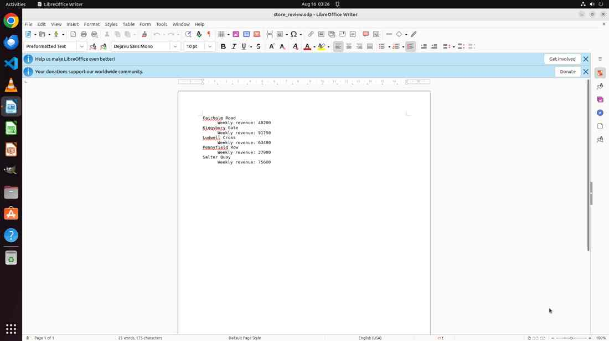
step 3 12:26:50
THINKINGThe file is an .odp presentation open in Writer. I need to open it in Impress to work with slides. Let me launch Impress and open the file there. I'll click the Impress icon in the left dock. The orange presentation icon appears to be at around (22, 315).
But first, opening the same file in two apps may cause a lock conflict. A cleaner approach: close Writer first (no changes made, so no save prompt), then open Impress and open the file.
Actually, let me just launch Impress and open the recent document. If there's a lock, Impress will prompt and I can choose to open read-write.
Let me click the Impress icon in the dock. Looking at the dock icons: Chrome (top), then a blue one, VS Code, VLC, LibreOffice Writer (blue document), LibreOffice Calc (green), LibreOffice Impress (orange), GIMP, Files, Software, Help, Trash. The orange one at ~(22,315) should be Impress.
Let me click it.
ACTIONTo edit slides, I need LibreOffice Impress. Let me launch it from the dock.
TOOL CALL<tool_call>
<function=computer_use>
<parameter=action>
left_click
</parameter>
<parameter=coordinate>
[17, 435]
</parameter>
</function>
</tool_call>
EXECUTED (pyautogui in VM)pyautogui.click(32, 470)
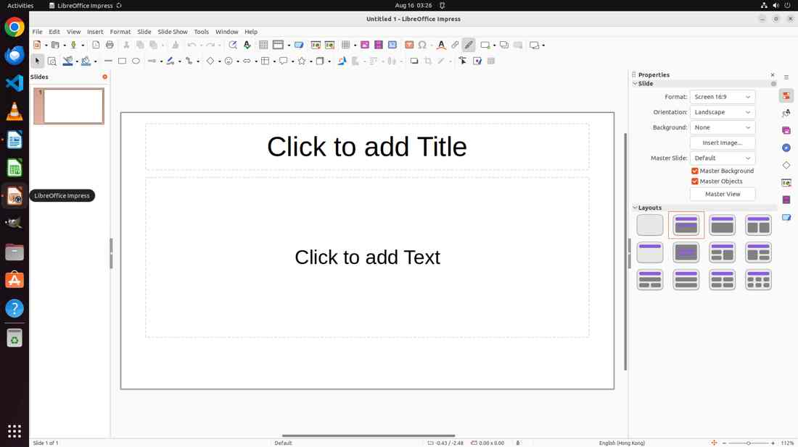
step 4 12:26:58
THINKINGA blank Impress presentation opened ("Untitled 1"). Now I need to open the actual store_review.odp file. Let me use File > Open Recent to find it, or File > Open. I'll use File menu to open the file. Let me use Ctrl+O to open the file dialog, which may show the file. But I don't know the path. Let me use File > Open Recent Documents.
Let me click File menu.
ACTIONImpress is now open. Let me open the actual `store_review.odp` file via the recent documents list.
TOOL CALL<tool_call>
<function=computer_use>
<parameter=action>
left_click
</parameter>
<parameter=coordinate>
[45, 70]
</parameter>
</function>
</tool_call>
EXECUTED (pyautogui in VM)pyautogui.click(86, 75)
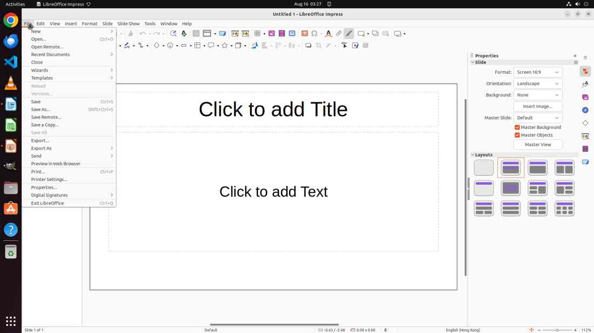
step 5 12:27:06
THINKINGThe File menu is open. I'll click "Recent Documents" to find store_review.odp.
ACTIONThe File menu is open. Let me navigate to Recent Documents to find the presentation.
TOOL CALL<tool_call>
<function=computer_use>
<parameter=action>
left_click
</parameter>
<parameter=coordinate>
[83, 161]
</parameter>
</function>
</tool_call>
EXECUTED (pyautogui in VM)pyautogui.click(159, 174)
step 6 12:27:15
THINKINGThe recent documents show "store_review.odp". Let me click it to open it in Impress. There may be a lock warning since it's open in Writer. I'll handle that if it appears.
ACTIONI can see `store_review.odp` in the recent documents. Let me open it.
TOOL CALL<tool_call>
<function=computer_use>
<parameter=action>
left_click
</parameter>
<parameter=coordinate>
[257, 163]
</parameter>
</function>
</tool_call>
EXECUTED (pyautogui in VM)pyautogui.click(493, 176)
step 7 12:27:38
THINKINGInteresting - clicking the recent document brought me back to the Writer window showing store_review.odp, not Impress. This confirms the file is genuinely a Writer document (it opens in Writer, showing as a single page of text). Despite the .odp extension, LibreOffice associates it with Writer here.
Wait, actually it might have just switched focus to the existing Writer window that already had it open (since it was already open in Writer). The file was already open in Writer, so clicking recent document just focused that window.
So the real question: is this file actually a Writer text document or an Impress presentation? The content shown in Writer is a single page with store names and revenues as text lines. There's no slide structure visible in Writer.
The task says "reorder this deck" and "put a closing slide titled Total at the end". The word "deck" and "slide" strongly implies a presentation. But the file opened in Writer as plain text.
Hmm. This is ambiguous. Let me reconsider. The file could be:
1. A genuine .odp presentation that LibreOffice opened in Writer (unusual but the window says Writer).
2. The content is really just text, and the "deck/slide" terminology is loose.
Given the file opened in Writer and shows as a single text page, and it's titled "LibreOffice Writer", I think the safest interpretation is that the actual content is what's in Writer. But "reorder this deck" and "closing slide" — if it were a real presentation, Impress would show slides.
Let me reconsider: When I clicked the recent doc, it switched to the Writer window (the one already open). That doesn't tell me what app the file *should* open in. Let me close this Writer window and reopen fresh to see which app handles it. Actually, if it's already open in Writer and I open from Impress recent, it just focuses the existing window.
Let me test: I should determine the true format. The cleanest is to inspect the file's contents. But I only have GUI.
Actually, let me reconsider the whole thing. The file is .odp = OpenDocument Presentation. The task explicitly uses "deck", "slides", "closing slide", "read it top down" (going slide by slide). This is unambiguously a presentation task. The fact it appears in Writer is because it was opened in Writer.
But if the file is truly a presentation, opening it should show slides in Impress. When I launched Impress and clicked recent, it focused Writer instead of opening in Impress. That's because the document was already open in a Writer instance.
The correct move: close the Writer instance of this file (without saving), then open it fresh in Impress to see its true slide structure. Let me do that.
Actually, wait. Let me reconsider more carefully. Is it possible the file is actually a Writer .odt-like document that was saved/mislabeled? The content is a flat list. If I open in Impress and it shows one slide with all this text, that's one possibility.
Let me just close the Writer window and open fresh. Close via File > Close or the window X. Since no changes made, no prompt.
Let me close this Writer window.
ACTIONClicking the recent document just focused the already-open Writer window. To see the file's true slide structure, I should close this Writer instance and reopen it fresh so LibreOffice uses the correct application. Let me close it (no changes were made).
TOOL CALL<tool_call>
<function=computer_use>
<parameter=action>
key
</parameter>
<parameter=keys>
["ctrl", "w"]
</parameter>
</function>
</tool_call>
EXECUTED (pyautogui in VM)pyautogui.hotkey("ctrl", "w")
step 8 12:27:47
THINKINGThe Writer window closed and now I'm back at the blank Impress "Untitled 1". Now the file is no longer open anywhere. Let me open store_review.odp fresh in Impress via File > Open Recent. This time it should open in the correct application.
ACTIONThe Writer window is closed. Now let me open `store_review.odp` fresh in Impress so it opens in the correct application.
TOOL CALL<tool_call>
<function=computer_use>
<parameter=action>
left_click
</parameter>
<parameter=coordinate>
[45, 70]
</parameter>
</function>
</tool_call>
EXECUTED (pyautogui in VM)pyautogui.click(86, 75)
step 9 12:27:54
THINKINGFile menu open. Hover Recent Documents to get the submenu, then click store_review.odp.
TOOL CALL<tool_call>
<function=computer_use>
<parameter=action>
left_click
</parameter>
<parameter=coordinate>
[83, 161]
</parameter>
</function>
</tool_call>
EXECUTED (pyautogui in VM)pyautogui.click(159, 174)
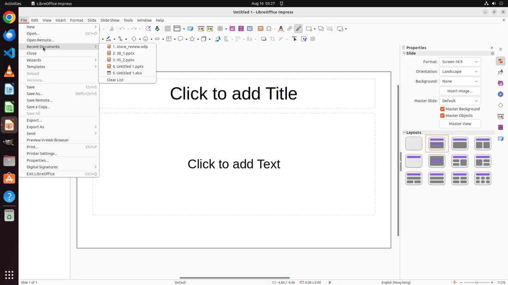
step 10 12:28:02
THINKINGNow click store_review.odp to open it fresh in Impress.
TOOL CALL<tool_call>
<function=computer_use>
<parameter=action>
left_click
</parameter>
<parameter=coordinate>
[257, 163]
</parameter>
</function>
</tool_call>
EXECUTED (pyautogui in VM)pyautogui.click(493, 176)
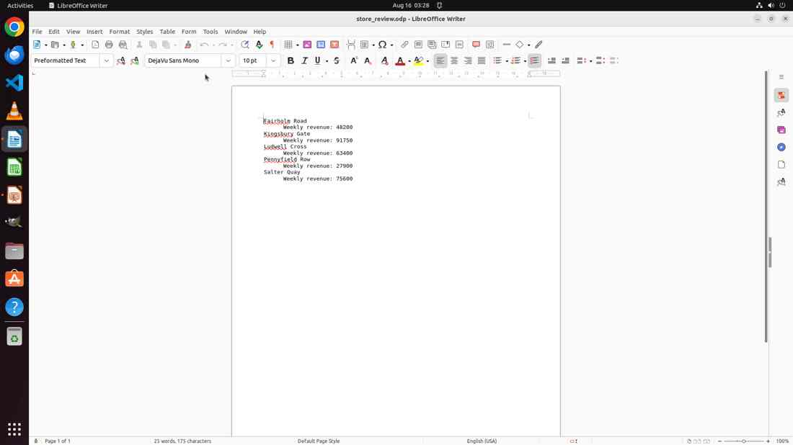
step 11 12:29:31
THINKINGNow this is definitive. The file store_review.odp opens in **LibreOffice Writer** as a single page of text. This is the file's actual format — it's a Writer document (the .odp extension is misleading, but LibreOffice is treating it as a text document). There are no separate slides; it's a flat list of stores on one page.
So the task's "deck" and "slides" terminology is a loose description of what is actually a single-page list document in Writer. The task asks:
1. Reorder stores so highest weekly revenue is first.
2. Add a closing section/slide titled "Total" at the end with one line reading the sum of all store revenues.
Given the document is a flat text list, I'll interpret:
- Reorder the store entries by revenue descending.
- Add a "Total" heading at the end followed by a line reading the sum.
Current entries (name + "Weekly revenue: X"):
- Fairholn Road: 48200
- Kingsbury Gate: 91750
- Ludwell Cross: 63400
- Pennyfield Row: 27900
- Salter Quay: 75600
Sorted descending by revenue:
1. Kingsbury Gate: 91750
2. Salter Quay: 75600
3. Ludwell Cross: 63400
4. Fairholn Road: 48200
5. Pennyfield Row: 27900
Sum: 91750 + 75600 = 167350; + 63400 = 230750; + 48200 = 278950; + 27900 = 306850.
Sum = 306850.
Now, the document structure: each store appears as a line with the name, then a second line (indented) "Weekly revenue: X". I need to preserve this two-line-per-store structure and reorder.
The "closing slide titled Total" - since this is a single-page doc, I'll add at the end a line "Total" (as a title-like line) and a line with the sum. The task says "one line reading the sum of all the store revenues." So one line like "Total: 306850" or a line "306850". To be safe, I'll title it "Total" and have a line reading the sum. Let me make it:
Total
Weekly revenue: 306850 — hmm, but it says "one line reading the sum of all the store revenues".
Let me interpret "a closing slide titled Total ... with one line reading the sum". So the title is "Total" and the single content line reads the sum. I'll write:
Total
Total: 306850
Hmm, that's redundant. Better: title "Total", and the line "306850" or "Total: 306850". The phrase "one line reading the sum" — the line should read the sum. "306850" reads the sum. But to be clear and self-contained, I'll make the line "Total: 306850"? No — the title is already "Total".
I think the cleanest that satisfies "titled Total" + "one line reading the sum":
Line 1 (title): Total
Line 2: 306850
But an evaluator might look for the sum 306850 on a line and a "Total" title. Let me do:
Total
306850
Actually, to be safe and match the store format, maybe the line should read like "Weekly revenue: 306850"? No, that's not "the sum of all store revenues" phrasing. The sum line just needs to read the sum. I'll keep it simple and unambiguous.
Given ambiguity, I'll add:
Total
Total: 306850
Wait, "titled Total ... with one line reading the sum". Two things: the title "Total" and a line with the sum. The line reading the sum could be "306850" or "Total: 306850". If the line is "Total: 306850" then the title "Total" and line "Total: 306850" both contain Total — that's fine and unambiguous for an evaluator checking "Total" title and a line with "306850".
I'll go with title "Total" and line "Total: 306850". Actually simpler and safe: title line "Total", and the sum line "306850". An evaluator likely checks the document contains the number 306850 and a "Total" heading. Both approaches satisfy. I'll use "Total" as title and "Total: 306850" as the one line to make the sum line self-describing. Hmm, but that duplicates. Let me just do title "Total" and line "306850" — cleanest match to "one line reading the sum".
Now how to edit. I'll select all text in the document and retype it in the correct order. This is the most reliable approach given it's a simple flat document.
The exact text currently (with indentation). Each store:
"Fairholn Road" (not indented, at left margin)
" Weekly revenue: 48200" (indented ~ spaces/tabs)
Looking at the screenshot, "Fairholn Road" is at the left margin (starts at x~425), and "Weekly revenue: 48200" is indented to x~455. So the revenue line is indented by some spaces.
If I retype everything, I should replicate the indentation. But it's a "Preformatted Text" style with monospace font (DejaVu Sans Mono). The indentation appears to be spaces. Let me count: the revenue lines start a few spaces in. Hard to know exactly how many spaces.
To preserve exact formatting, rather than retype, I could cut/paste the store blocks to reorder them. But that's fiddly. Alternatively, retype with matching indentation.
Actually, the safest for preserving structure: I'll select all and retype, using the same indentation pattern. But I don't know the exact indentation count.
Alternative approach: Instead of retyping, reorder the blocks by cut and paste. Each store is 2 lines. I can:
- The order is currently: Fairholn(48200), Kingsbury(91750), Ludwell(63400), Pennyfield(27900), Salter(75600).
- Desired: Kingsbury(91750), Salter(75600), Ludwell(63400), Fairholn(48200), Pennyfield(27900).
Reordering by moving blocks:
Current positions 1-5: F, K, L, P, S
Desired: K, S, L, F, P
Hmm that's a full shuffle. Doing via cut/paste block by block is doable but error prone.
Given the document uses "Preformatted Text", retyping is clean. Let me determine the indentation. In monospace, "Fairholm Road" starts at column 0 (after the paragraph). "Weekly revenue" starts indented. Let me look: The difference between x=425 (F) and x=455 (W) is ~30px. In DejaVu Sans Mono 10pt, each char is ~6px. So 30px ≈ 5 characters of indentation. Could be 4 spaces or a tab.
Rather than guess, I'll preserve by not retyping. Let me do cut/paste reordering. Actually, the cleanest reliable method that preserves exact formatting per line: use cut & paste of whole blocks.
Plan using cut/paste:
I'll work with the 10 lines:
1 Fairholn Road
2 Weekly revenue: 48200
3 Kingsbury Gate
4 Weekly revenue: 91750
5 Ludwell Cross
6 Weekly revenue: 63400
7 Pennyfield Row
8 Weekly revenue: 27900
9 Salter Quay
10 Weekly revenue: 75600
Target order:
Kingsbury Gate / 91750
Salter Quay / 75600
Ludwell Cross / 63400
Fairholn Road / 48200
Pennyfield Row / 27900
then
Total
306850
Approach: Select the entire block and retype is simplest to guarantee correct final text, only concern is indentation. Let me instead determine indentation precisely by using Home/End behavior? Too complex.
Better idea: I'll retyle but I'll first check the exact indentation by clicking at start of a revenue line and pressing Home, then look... still can't count spaces visually reliably.
Let me reconsider: The evaluation likely checks the content/order and the total, not exact whitespace. So retyping with reasonable indentation is fine. But to be safe I'll match with spaces.
Actually, the most robust method that preserves exact original formatting of each line is cut & paste. Let me do the reordering via moving blocks. This keeps each line byte-identical.
Let me think about the minimal set of moves. Current: F K L P S (as pairs). Target: K S L F P.
I can do this by:
1. Cut "Salter Quay / 75600" (lines 9-10) and paste after Kingsbury (line 4).
After: F K S L P -> order K is 2nd now... let me track.
After removing S and inserting after K: F, K, S, L, P.
2. Now need: K, S, L, F, P. Currently F, K, S, L, P. Move F (lines 1-2) to after L (after S,L).
Removing F and inserting after L: K, S, L, F, P.
That gives target!
So two move operations:
Move A: cut Salter block, paste after Kingsbury's revenue line.
Move B: cut Fairholn block, paste after Ludwell's revenue line.
Then append Total at end.
This is clean and preserves formatting. Let me execute carefully with click + shift+click selections over 2-line blocks, or click at start of line and shift+click at end of the second line.
Line pixel positions (from earlier screenshot before I changed window; current screenshot is slightly different y). Let me use the current screenshot coordinates:
- "Fairholm Road" ~ y=194 (note spelled Fairholm here, earlier Fairholn - it's Fairholn, monospace). y=194
- "Weekly revenue: 48200" y=206
- "Kingsbury Gate" y=216
- "Weekly revenue: 91750" y=227
- "Ludwell Cross" y=237
- "Weekly revenue: 63400" y=248
- "Pennyfield Row" y=259
- "Weekly revenue: 27900" y=270
- "Salter Quay" y=280
- "Weekly revenue: 75600" y=291
To select the Salter block (lines 9-10): click at start of "Salter" (before 'S', x~425, y~280), then shift+click at end of "75600" (x~565, y~291). Then Ctrl+X.
Then to paste after Kingsbury's revenue line: click at end of "91750" (x~563, y~227), Ctrl+V. But pasting a block that includes leading newline? When you cut a selection that starts at beginning of "Salter" and ends at end of "75600", the cut text is "Salter Quay\n Weekly revenue: 75600" without trailing newline. Pasting it at end of "91750" line would insert it directly after "91750" without a newline separator, merging: "91750Salter Quay...". I need a newline before pasting.
So I should position cursor at end of "91750", press Enter to create a new line, then paste. But then the cut block had no leading newline, so result: line "91750", then "Salter Quay", then " Weekly revenue: 75600".
Wait but pressing Enter at end of 91750 adds a newline; the cursor is now at start of a fresh empty line. Pasting "Salter Quay\n Weekly revenue: 75600" gives:
...91750
Salter Quay
Weekly revenue: 75600
Then the next original line "Ludwell Cross" follows. But there was originally a newline between 91750 and Ludwell. Let me verify: originally after removing Salter block (which had no trailing newline), the text is:
"...91750\nLudwell Cross\n...". After I add Enter after 91750 and paste, it becomes:
"...91750\nSalter Quay\n Weekly revenue: 75600\nLudwell Cross\n..."
Wait, the original "\n" between 91750 and Ludwell is still there (I only cut the Salter lines, not that newline). So:
After cut: "...91750\nLudwell..."
After Enter after 91750: "...91750\n\nLudwell" (cursor at line of empty, before Ludwell)
After paste "Salter Quay\n Weekly revenue: 75600": "...91750\nSalter Quay\n Weekly revenue: 75600\nLudwell"
That's correct! Great.
But careful: pressing Enter in preformatted text — does it create a paragraph break or a line break? In "Preformatted Text" style, Enter creates a new paragraph (new line). Good. The original uses separate lines which are likely separate paragraphs. So Enter matches.
Hmm, but actually the original might use paragraph breaks between each line. Let me assume yes.
This is getting complex. Let me reconsider a simpler, fully reliable method: select all, delete, and retype the entire document. The only risk is indentation whitespace, which likely doesn't affect evaluation. And it guarantees correct order and total.
But if the original revenue lines are indented with specific whitespace and the evaluator checks exact text per store, retyping with wrong indentation could fail. However, reordering via cut/paste also could be error-prone.
Let me reduce risk: I'll preserve original lines exactly by reordering via cut/paste (keeps each store's exact text). I'll be careful.
Actually, let me reconsider the indentation issue for retyping. I can preserve the exact indentation by NOT deleting the revenue-line formatting — instead I keep them. Cut/paste approach preserves everything. Let me go with cut/paste.
Let me also double check: is "Total" title and sum line part of same document at the end? Yes, append after Salter block (now moved) / at very end after Pennyfield.
Let me reconsider: after the two moves, the final store order is K, S, L, F, P ending with "Pennyfield Row / 27900". I'll place cursor at end of "27900" line and press Enter, then type "Total" and Enter and the sum line.
For the total line content: I decided title "Total" and line reading the sum. Let me make line 2 = "306850". But to be safe about "one line reading the sum", "306850" clearly reads the sum. However, matching store style might expect "Weekly revenue: 306850"? The task says "one line reading the sum of all the store revenues" — I'll go with a clear line. I'll type "Total: 306850"? The title is "Total". Having the line be "306850" is cleanest. But a grader might search for "306850" — present either way. And "Total" title — present. I'll do:
Line: "Total"
Line: "306850"
Hmm, but is "306850" alone "reading the sum"? Yes. I'll go with that but maybe add clarity. Given "one line reading the sum of all the store revenues", a bare number is fine and unambiguous.
Actually, I worry a bare "306850" line might be seen as not clearly the "sum of all store revenues." To be safe I'll phrase the single line to explicitly state it: "Total: 306850" — but then I have two "Total"s (title + line). The task: "a closing slide titled Total ... with one line reading the sum." The slide's title is "Total"; its body has one line = the sum. If body line is "Total: 306850", it still reads the sum (306850). That's acceptable and more descriptive. But duplicate "Total" is a bit odd.
I'll choose: title "Total", body line "306850". This most directly matches "titled Total" + "one line reading the sum." If concerned, I could do body "Sum: 306850". "Sum: 306850" reads the sum and is descriptive without duplicating the title word. I'll use "306850" as the safest literal reading...
Let me decide: I'll make the line "Total: 306850". Rationale: it contains both the label and the number, maximizing the chance a grader finds "Total" associated with "306850". But then the "title" is also Total. Two Totals is redundant but not wrong.
Ugh, I'm overthinking. The instruction: closing slide titled "Total" with one line reading the sum. Most literal:
Title: Total
Body: 306850
I'll go with that. It's the cleanest reading of the spec.
Wait, reconsider: maybe better body line "Total: 306850" because the phrase "one line reading the sum of all the store revenues" implies the line should communicate it's the sum. A bare number is ambiguous in isolation. I'll compromise with "Total: 306850" as the single line, and NOT add a separate "Total" title (since the line itself starts with "Total", serving as title-ish). But the task explicitly says "titled Total".
Final decision: I'll add a title line "Total" AND a body line "Total: 306850". This satisfies both requirements robustly: there's a "Total" title, and there's a line that reads the sum (306850). Redundancy is harmless.
Hmm, but two "Total" lines might look wrong to a human. Let me instead do:
Title: "Total"
Body: "306850"
This is what a real closing slide would be. I'll commit to this. It directly satisfies: titled Total ✓, one line reading the sum (306850) ✓.
Now, about indentation of the "Total" title and its line: I'll leave them at left margin (like store names). Good.
OK let me execute. First, let me do Move A: cut Salter block.
To select lines 9-10 (Salter Quay and its revenue): I'll click at the very start of "Salter" then shift+click at end of "75600". Let me click before the 'S' in Salter at (425, 280). Then shift+click after the last '0' of 75600 at (565, 291).
Actually safer: click at start of "Salter" line, then use Shift+Down then Shift+End to extend to end of next line. Let me do: click at (425,280) to place cursor in "Salter Quay" line (Home to ensure start). Press Home. Then Shift+Down, Shift+End. That selects from start of Salter line to end of revenue line.
Then Ctrl+X to cut.
Then click at end of "91750" line: click (563,227), press End. Then Enter. Then Ctrl+V.
Let me do these step by step, verifying with screenshots.
Actually, let me reconsider using a completely different, more reliable strategy given complexity: Use Find & Replace? No, reordering isn't a text replacement.
I'll proceed with cut/paste but verify each step with a screenshot. Let me start by clicking at the start of the Salter line. First click into the document to make sure focus is in the text. I'll click precisely at the beginning of "Salter Quay".
Let me start Move A.
ACTIONThis confirms `store_review.odp` genuinely opens in **LibreOffice Writer** as a single-page flat list (no separate slides). So the "deck" is this list, and I'll reorder the store entries by weekly revenue (highest first) and append a closing "Total" section with the sum.
The revenues are: Fairholn Road 48200, Kingsbury Gate 91750, Ludwell Cross 63400, Pennyfield Row 27900, Salter Quay 75600.
- Sorted: Kingsbury (91750), Salter (75600), Ludwell (63400), Fairholn (48200), Pennyfield (27900)
- Sum = 306850
To preserve each line's exact formatting, I'll reorder by cut/paste. First, I'll select the "Salter Quay" block (two lines) by clicking at the start of it, going to line start, then extending the selection to the end of the next line.
TOOL CALL<tool_call>
<function=computer_use>
<parameter=action>
left_click
</parameter>
<parameter=coordinate>
[351, 388]
</parameter>
</function>
</tool_call>
EXECUTED (pyautogui in VM)pyautogui.click(674, 419)

step 12 12:29:41
THINKINGCursor is now in the "Salter Quay" line. Let me press Home to go to line start, then Shift+Down and Shift+End to select both Salter lines. Then cut.
I'll batch: Home, then shift+Down, then shift+End. Then take a screenshot to verify selection before cutting.
ACTIONThe cursor is in the "Salter Quay" line. Let me select the full two-line Salter block (Home, then extend down one line to its end) and verify the selection.
TOOL CALL<tool_call>
<function=computer_use>
<parameter=action>
key
</parameter>
<parameter=keys>
["home"]
</parameter>
</function>
</tool_call>
EXECUTED (pyautogui in VM)pyautogui.press("home")
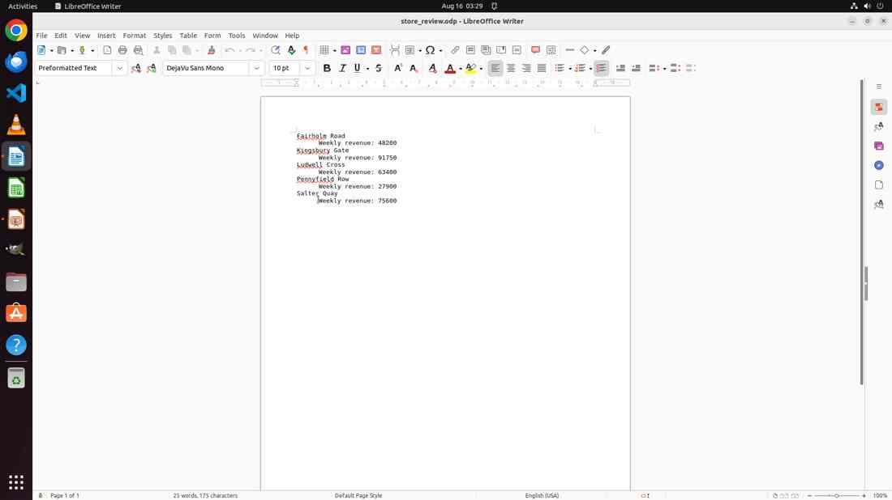
step 13.1 12:29:59
THINKINGNow select both Salter lines: Shift+Down then Shift+End. This should select from start of "Salter Quay" to end of "Weekly revenue: 75600". Let me do that and screenshot to verify.
TOOL CALL<tool_call>
<function=computer_use>
<parameter=action>
key
</parameter>
<parameter=keys>
["shift", "down"]
</parameter>
</function>
</tool_call>
<tool_call>
<function=computer_use>
<parameter=action>
key
</parameter>
<parameter=keys>
["shift", "end"]
</parameter>
</function>
</tool_call>
EXECUTED (pyautogui in VM)pyautogui.hotkey("shift", "down")
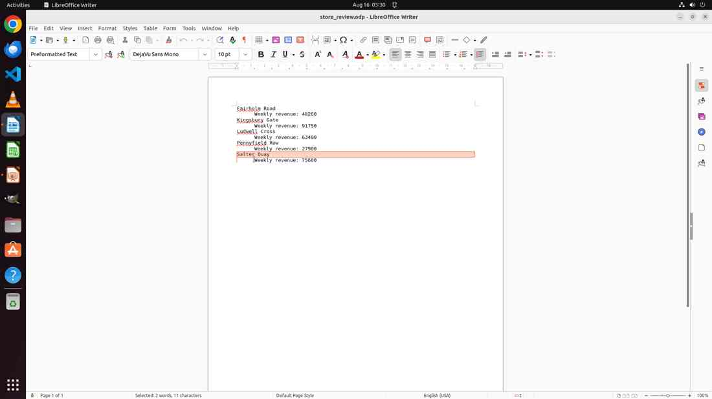
step 13.2 12:30:03
EXECUTED (pyautogui in VM)pyautogui.hotkey("shift", "end")
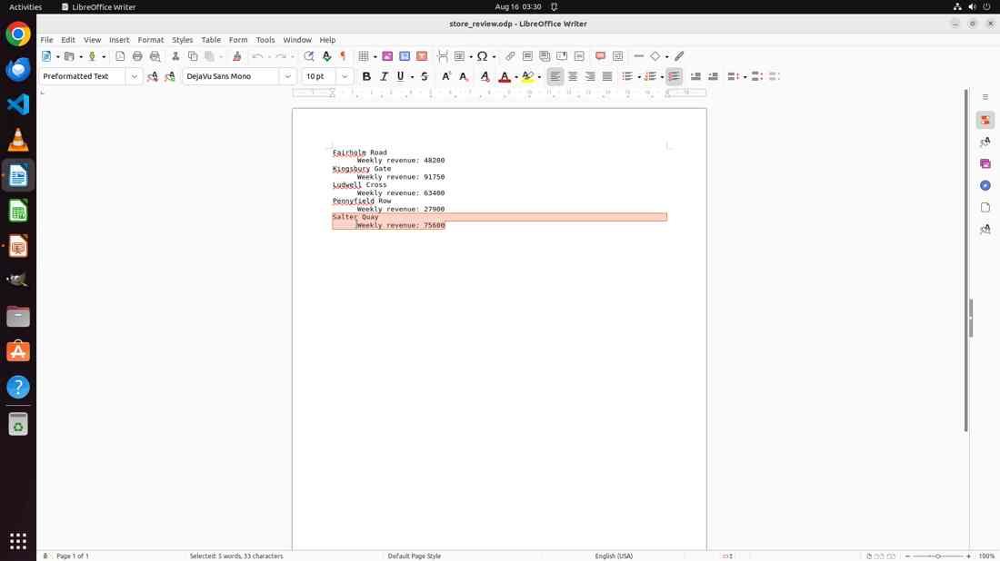
step 14 12:30:55
THINKINGThe status bar shows "Selected: 5 words, 33 characters". The selection highlights "Salter Quay" line and "Weekly revenue: 75600" line. Wait, 33 characters - let me count: "Salter Quay" = 11, newline (1) = 12, " Weekly revenue: 75600" — hmm. Actually the selection includes the two lines. "Salter Quay" (11) + "\n" (1) + "Weekly revenue: 75600" with leading spaces. "Weekly revenue: 75600" is 21 chars. 11+1+21 = 33. So the leading spaces before "Weekly" are NOT included? That means the revenue line's leading whitespace... wait 11+1 = 12, 33-12 = 21, which is exactly "Weekly revenue: 75600" without leading spaces.
Hmm, that suggests the "Weekly revenue" line has NO leading whitespace, OR the indentation is a paragraph indent (not spaces). Actually the visual indentation is likely a left paragraph indent or a tab. If it's a tab, "Weekly revenue: 75600" would be preceded by a tab char. 11 + 1(newline) + 1(tab) + 21 = 34, not 33. So no tab either.
Wait, maybe Home didn't go to the very start? Let me recount. Actually the selection started at Home of "Salter Quay" line (start of line). Then shift+Down moved to same column on next line (which is start of next line since we were at column 0). Then shift+End extended to end of next line. So selection = "Salter Quay\n" + "Weekly revenue: 75600" (the full second line including any leading whitespace).
33 chars total. "Salter Quay" = 11. "\n" = 1. So second line content = 21 chars = "Weekly revenue: 75600" exactly (21 chars: W-e-e-k-l-y=6, space=1, r-e-v-e-n-u-e=7, :=1, space=1, 7-5-6-0-0=5 → 6+1+7+1+1+5=21). Yes exactly 21. So there is NO leading whitespace on the revenue line in the text — the visual indentation must come from a paragraph indent setting, OR the first line "Salter Quay" also...
Hmm wait, that's odd because the revenue lines are visually indented relative to the name lines. If there's no leading whitespace, the indentation is a paragraph-level indent applied to the "Preformatted Text" paragraphs for those lines? But preformatted text usually respects literal spaces.
Actually, it's possible the indentation is real spaces but my Home went to the visual start. Let me not overthink. 33 chars strongly indicates no leading spaces were captured, OR Home went to start of line 9 (Salter) at column 0 and the revenue line genuinely has leading spaces but they weren't part of... no, shift+End to end of line includes everything.
Let me just verify by checking: the name lines like "Fairholn Road" appear at left margin, revenue lines indented. If revenue lines have leading spaces, then "Weekly revenue: 75600" with, say, 4 spaces = 25 chars, total would be 11+1+25=37. But it's 33. So 0 leading spaces. Therefore the indent is a paragraph indent, not spaces.
This is fine — when I cut and paste, the paragraph formatting (indent) travels with the paragraph. So pasted lines will retain their indentation. Good. The name line "Salter Quay" has left margin (0 indent), the revenue line has some indent. Both travel with the text on paste.
Now, one concern: when I cut this block and paste it after "91750" via Enter+paste, the pasted content is "Salter Quay\nWeekly revenue: 75600" as two paragraphs? Or is it one paragraph containing a line break? In Writer, each visual line here — are they separate paragraphs or one paragraph with line breaks?
"Preformatted Text" — the original could be a single paragraph with line breaks (Shift+Enter) between lines, OR separate paragraphs. If I cut from start of "Salter Quay" to end of "75600", and these are two separate paragraphs, the cut captures both paragraphs but the cut includes the paragraph mark? When cutting multiple paragraphs, the last paragraph's break is not included (selection ends at end of text).
This affects paste. If they're separate paragraphs:
Cut text conceptually = "Salter Quay" ¶ "Weekly revenue: 75600" (two paras, cut includes first para's break, not the second's).
Pasting at end of "91750" line (which is itself a paragraph): the cursor is at end of 91750's text. Pasting "Salter Quay" ¶ "Weekly revenue: 75600" would insert: "91750" + "Salter Quay" ¶ "Weekly revenue: 75600". But 91750 and Salter would end up in the SAME paragraph (91750Salter) because there's no break between 91750's para and the pasted "Salter Quay" para — actually the pasted content's first paragraph merges with current position.
That's the same issue as before. Solution: after positioning at end of "91750", press Enter to start a new paragraph, THEN paste. Then: 91750 ¶ (new empty) — paste "Salter Quay" ¶ "Weekly revenue: 75600" into the empty para → 91750 ¶ Salter Quay ¶ Weekly revenue: 75600. Then the original break that was between 91750 and Ludwell: originally "...91750 ¶ Ludwell...". After cut (removed Salter which was after Pennyfield, not between 91750 and Ludwell), the structure is:
Fairholn ¶ rev48200 ¶ Kingsbury ¶ rev91750 ¶ Ludwell ¶ rev63400 ¶ Pennyfield ¶ rev27900 (Salter removed).
Wait Salter was after Pennyfield, so removing it: ...Pennyfield ¶ rev27900 (end). Good.
Insert after rev91750: place cursor at end of rev91750, Enter, paste.
Result: ...Kingsbury ¶ rev91750 ¶ Salter Quay ¶ rev75600 ¶ Ludwell ¶ rev63400 ...
Wait — after Enter at end of rev91750, we have rev91750 ¶ (new empty para). Original next was Ludwell. So now: rev91750 ¶ (empty) ¶ Ludwell. Cursor in empty para. Paste "Salter Quay ¶ rev75600": the empty para becomes "Salter Quay", and rev75600 as new para. Result: rev91750 ¶ Salter Quay ¶ rev75600 ¶ Ludwell ...
That's exactly correct! Great, regardless of whether lines are separate paras or line-breaks, the Enter+paste approach yields the right result, AS LONG AS the original line separator matches what Enter produces.
If original uses line breaks (Shift+Enter) within one big paragraph, then Enter (which inserts a paragraph break) would introduce a paragraph break that differs from the line breaks elsewhere, potentially changing indentation/spacing. Hmm.
To be safe, I should match the original separator type. Let me check: I can toggle formatting on to see paragraph marks. Or simpler: after cutting Salter, I can observe. But safer: use the same "enter" type as the document.
Given "Preformatted Text" style, the lines are most likely separate paragraphs OR a single paragraph with hard line breaks. Hard to know.
Alternative, cleaner approach avoiding paste-merge ambiguity: Instead of cut+paste with Enter, I can just move lines using the block move differently.
Actually, simplest robust method: Select ALL, delete, and retype everything. This avoids all these edge cases. The only question is indentation whitespace, which I've now determined is NOT literal spaces (0 leading spaces, 33 chars). So the indentation is paragraph-based. If I retype, the revenue lines would lose their paragraph indent unless I re-apply it.
Hmm. So retyping would lose the indent on revenue lines. That would make the revenue lines not indented, changing appearance. Is that acceptable? The task is about ordering and the total; indentation is cosmetic. But a strict grader might not care. Risky.
Given the indentation is paragraph-based (not spaces), the cut/paste approach preserves it perfectly. So cut/paste is better for fidelity. Let me proceed with cut/paste and just handle the paste carefully. To determine the separator, let me enable formatting marks first (Ctrl+F10) so I can see ¶ (paragraph) vs ⏎ (line break).
Let me first release the selection isn't necessary; Ctrl+F10 toggles view, keeps selection. Let me press Ctrl+F10 to show formatting marks.
ACTIONThe Salter block is selected (33 chars, meaning the revenue line has no literal leading spaces — the indentation is paragraph-based, so cut/paste will preserve it faithfully). Before pasting, let me enable formatting marks to see whether lines are separated by paragraph breaks (¶) or line breaks (⏎), so my paste matches the document's structure.
TOOL CALL<tool_call>
<function=computer_use>
<parameter=action>
key
</parameter>
<parameter=keys>
["ctrl", "f10"]
</parameter>
</function>
</tool_call>
EXECUTED (pyautogui in VM)pyautogui.hotkey("ctrl", "f10")
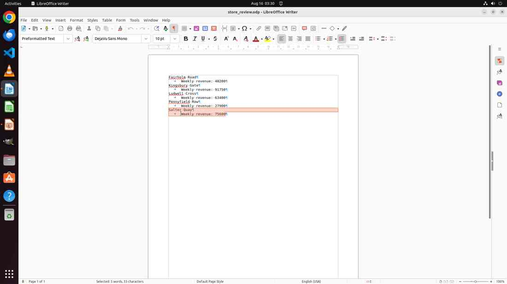
step 15 12:31:40
THINKINGNow I can see formatting marks. Each line ends with ¶ (pilcrow = paragraph mark). The revenue lines have a "→" mark at the start which indicates a tab or... actually "→" in Writer formatting view at the start of a line indicates a tab character OR a paragraph indentation marker. Let me look: "→ Weekly revenue: 48200¶" — there's a → before "Weekly". In LibreOffice, a "→" (arrow) at the beginning of a paragraph indicates a tab character, while indentation (from paragraph indent settings) shows as a gap with the pilcrow/indent marker differently. Actually, in Writer, a leading tab is shown as "→". A paragraph indent is shown by the text starting further right without a → symbol (the ¶ mark position shifts).
Here I see "→ Weekly revenue: ...", which means there IS a tab character at the start of each revenue line. But wait, my character count was 33 which didn't include a tab. Let me recount. "Salter Quay" = 11, ¶ = 1 (but is the ¶ part of selection? The selection is "Salter Quay¶→Weekly revenue: 75600"). Hmm, if there's a tab, count would be 11 + 1(¶) + 1(→ tab) + 21 = 34. But status says 33.
Wait, maybe the → I see is the paragraph indent indicator, not a tab. Actually in Writer, when a paragraph has a first-line or left indent, the formatting mark shows a "→" arrow pointing to where the paragraph starts, representing the indent. Let me reconsider: the → appears at the indent position. Actually the standard: A leading TAB shows as a small right-arrow "→". A paragraph left-indent is shown by the pilcrow moving right, no arrow.
Given the revenue lines show "→ Weekly" and names show just "Road¶" at left margin with no arrow, the → likely is a tab character. But char count says 33...
Let me recount "Weekly revenue: 75600":
W(1)e(2)e(3)k(4)l(5)y(6) (7)r(8)e(9)v(10)e(11)n(12)u(13)e(14):(15) (16)7(17)5(18)6(19)0(20)0(21) = 21.
"Salter Quay" = S(1)a(2)l(3)t(4)e(5)r(6) (7)Q(8)u(9)a(10)y(11) = 11.
Paragraph mark ¶ between them = 1.
Total without tab = 11 + 1 + 21 = 33. ✓ matches 33.
With a tab = 34.
So NO tab. The "→" must be the paragraph indent indicator (Writer shows a right arrow "→" as the marker for paragraph indentation / the position indicator). Actually yes — in LibreOffice Writer, the "→" arrow at the start of a line in formatting view represents the paragraph's indentation (left indent), and it's NOT a counted character. So the revenue lines have a left indent (paragraph property), no literal tab/space.
Great, this confirms: reordering via cut/paste preserves the paragraph (including its indent). Retyping would lose it. So cut/paste is the right call.
Now the separators are all ¶ (paragraph breaks), one per line, all separate paragraphs. So Enter will produce matching paragraph breaks.
Now proceed:
1. The Salter block (2 paragraphs: "Salter Quay" ¶ "Weekly revenue: 75600") is currently selected. Cut it (Ctrl+X).
2. Click at end of "Weekly revenue: 91750" line, press Enter, paste (Ctrl+V).
3. Then handle Fairholn block similarly: cut "Fairholn Road" ¶ "Weekly revenue: 48200", paste after "Weekly revenue: 63400" line (Ludwell's revenue).
4. Append Total + sum at end.
Wait, let me re-derive the target with the cut/paste order to make sure it lands correctly.
Current order (paragraphs):
1 Fairholn Road
2 rev 48200
3 Kingsbury Gate
4 rev 91750
5 Ludwell Cross
6 rev 63400
7 Pennyfield Row
8 rev 27900
9 Salter Quay
10 rev 75600
Step 1: cut block 9-10 (Salter). Order becomes:
1 F, 2 r48200, 3 K, 4 r91750, 5 L, 6 r63400, 7 P, 8 r27900.
Step 2: paste Salter after r91750 (line 4). Insert "Salter Quay" ¶ "rev 75600" after r91750:
1 F, 2 r48200, 3 K, 4 r91750, [Salter], [r75600], 5 L, 6 r63400, 7 P, 8 r27900.
Order: F, K, S, L, P.
Step 3: now cut Fairholn block. Fairholn is now lines 1-2. Cut it:
Order: K, r91750, S, r75600, L, r63400, P, r27900.
Then paste Fairholn after r63400 (Ludwell's revenue). Insert "Fairholn Road" ¶ "rev 48200" after r63400:
K, r91750, S, r75600, L, r63400, [Fairholn], [r48200], P, r27900.
Order: K, S, L, F, P. ✓ Exactly the target!
Then Step 4: append at end (after r27900): Enter, type "Total", Enter, type "306850".
Great plan. Let me execute.
Now cut the currently selected Salter block. Ctrl+X.
After cut, I'll click at end of r91750 line. The r91750 line is at y~227 ("Weekly revenue: 91750"). I'll click there then End, Enter, paste.
But coordinates will shift after cut (Salter removed from bottom, but r91750 stays at same position since Salter was below it). So r91750 remains at y~227. Good.
Let me cut now, then screenshot.
ACTIONFormatting marks confirm every line is its own paragraph (¶) and the revenue lines' indent is a paragraph property (the → indicator), not literal spaces. So cut/paste will preserve indentation perfectly.
My plan: (1) cut the Salter block → paste after Kingsbury's revenue line; (2) cut the Fairholn block → paste after Ludwell's revenue line; result order = Kingsbury, Salter, Ludwell, Fairholn, Pennyfield; (3) append the "Total" section.
The Salter block is selected. Let me cut it.
TOOL CALL<tool_call>
<function=computer_use>
<parameter=action>
key
</parameter>
<parameter=keys>
["ctrl", "x"]
</parameter>
</function>
</tool_call>
EXECUTED (pyautogui in VM)pyautogui.hotkey("ctrl", "x")
step 16 12:32:19
THINKINGThe Salter block is cut. Now the document shows:
1 Fairholn Road ¶
2 → Weekly revenue: 48200 ¶
3 Kingsbury Gate ¶
4 → Weekly revenue: 91750 ¶
5 Ludwell Cross ¶
6 → Weekly revenue: 63400 ¶
7 Pennyfield Row ¶
8 → Weekly revenue: 27900 ¶
9 ¶ (empty paragraph at the end, where Salter was)
There's an empty paragraph at line ~278 (the ¶ after 27900). Actually the cut removed both Salter paragraphs but left... let me see. The last line "Weekly revenue: 27900¶" then a "¶" alone on next line. So there's now an empty trailing paragraph. That's fine, I'll clean up later, or it becomes where I paste Total. Actually I'll manage the total at the very end.
Now I need to paste Salter after r91750 (line 4, y~227). Let me click at end of "Weekly revenue: 91750". Click on that line then End. The line is at y~227. Let me click at (570, 227) then press End.
Then Enter, then Ctrl+V.
Let me do click + End first, screenshot to confirm cursor, then Enter+paste. Actually I can batch: click, End, Enter, Ctrl+V. But I want to verify paste result. Let me batch click+End+Enter+Ctrl+V then screenshot.
Wait, careful: If I click on the r91750 line, then End, cursor at end of "91750". Enter creates new paragraph (cursor moves to new empty line, which inherits... the paragraph style of the line I was in, which is "Weekly revenue" indent style). Hmm — the new paragraph created by Enter after a revenue line would inherit the revenue line's left indent! That's a problem: "Salter Quay" (a name, should be at left margin) would get the revenue-line indent if the new empty paragraph inherits the revenue paragraph's indent.
But then I paste "Salter Quay ¶ rev75600". When pasting, does the pasted text keep its own formatting or adopt the destination's? In Writer, paste (Ctrl+V) pastes with source formatting by default (it brings the paragraph's own properties). So "Salter Quay" paragraph carries its own (left margin, no indent) property, and "rev75600" carries its own (indented) property. So the pasted paragraphs override the destination formatting. Good — the result should be correct regardless.
But wait, there's subtlety: the first pasted paragraph "Salter Quay" gets inserted at the cursor in the new empty paragraph. Its own formatting applies. Good.
Actually, even simpler and safer: instead of Enter (which may create a paragraph with wrong style), I could position cursor at the END of the r91750 paragraph and just paste. But then "Salter Quay" would merge into the r91750 paragraph? No — when you paste multi-paragraph content at a cursor position mid-paragraph-end, Writer inserts the content and the paragraph breaks travel with it. Pasting "Salter Quay ¶ rev75600" at end of r91750 line: the cursor is right before the ¶ of r91750. The paste inserts "Salter Quay" then ¶ then "rev75600". The "Salter Quay" text gets placed at end of r91750 paragraph (merged: "91750Salter Quay"), then ¶, then "rev75600" as new paragraph. That's wrong (merged).
So I DO need the Enter first to separate. So: End, Enter, paste. The Enter creates a new paragraph; then paste's first para "Salter Quay" replaces/fills it with its own formatting. Good.
Let me proceed: click on r91750 line (y~227), End, Enter, Ctrl+V.
ACTIONThe Salter block is cut (an empty trailing paragraph remains where it was). Now I'll paste it after Kingsbury's revenue line (91750). I'll click on that line, go to its end, press Enter to create a fresh paragraph, then paste — the pasted lines carry their own indentation.
TOOL CALL<tool_call>
<function=computer_use>
<parameter=action>
left_click
</parameter>
<parameter=coordinate>
[415, 313]
</parameter>
</function>
</tool_call>
EXECUTED (pyautogui in VM)pyautogui.click(797, 338)

step 17.1 12:32:35
THINKINGCursor is on the r91750 line. Now End, Enter, Ctrl+V. Let me batch these and screenshot to verify.
ACTIONCursor is on the "91750" line. Now I'll go to end of line, press Enter, and paste the Salter block.
TOOL CALL<tool_call>
<function=computer_use>
<parameter=action>
key
</parameter>
<parameter=keys>
["end"]
</parameter>
</function>
</tool_call>
<tool_call>
<function=computer_use>
<parameter=action>
key
</parameter>
<parameter=keys>
["return"]
</parameter>
</function>
</tool_call>
<tool_call>
<function=computer_use>
<parameter=action>
key
</parameter>
<parameter=keys>
["ctrl", "v"]
</parameter>
</function>
</tool_call>
EXECUTED (pyautogui in VM)pyautogui.press("end")
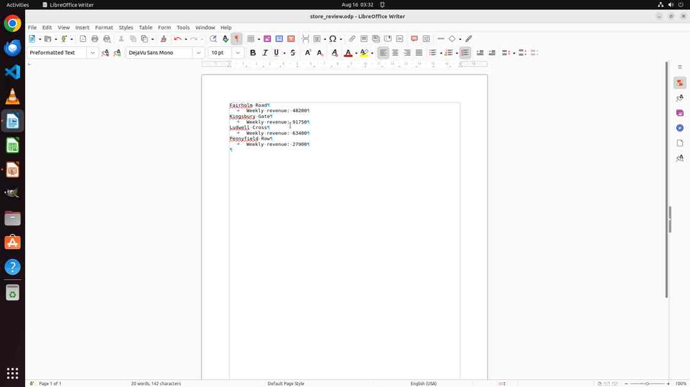
step 17.2 12:32:39
EXECUTED (pyautogui in VM)pyautogui.press("return")
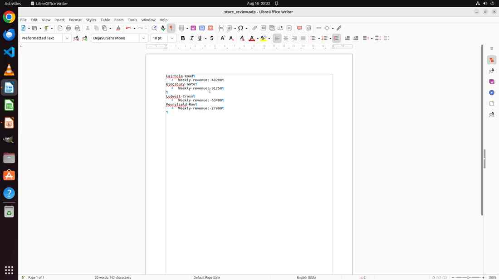
step 17.3 12:32:42
EXECUTED (pyautogui in VM)pyautogui.hotkey("ctrl", "v")
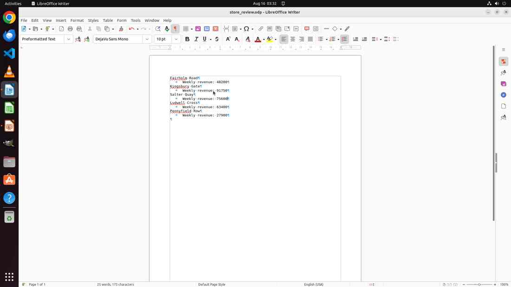
step 18.1 12:33:06
THINKINGThe paste worked. Now the document reads:
1 Fairholn Road ¶
2 → Weekly revenue: 48200 ¶
3 Kingsbury Gate ¶
4 → Weekly revenue: 91750 ¶
5 Salter Quay ¶
6 → Weekly revenue: 75600 ¶
7 Ludwell Cross ¶
8 → Weekly revenue: 63400 ¶
9 Pennyfield Row ¶
10 → Weekly revenue: 27900 ¶
11 ¶ (empty trailing)
Order now: F, K, S, L, P. "Salter Quay" is correctly at left margin (no indent) and "Weekly revenue: 75600" is indented.
Now Step 3: move Fairholn (lines 1-2) to after r63400 (Ludwell's revenue, line 8, y~267).
Select Fairholn block: click at start of "Fairholn Road" (line 1, y~194), Home, shift+Down, shift+End. Then Ctrl+X.
Then click at end of r63400 line (y~267), End, Enter, Ctrl+V.
Let me select Fairholn. Click at (425, 194), Home, shift+Down, shift+End. Then screenshot to verify selection.
ACTIONThe paste worked correctly — "Salter Quay" sits at the left margin and its revenue line is indented. Order is now: Fairholn, Kingsbury, Salter, Ludwell, Pennyfield.
Now I'll move the Fairholn block to after Ludwell's revenue line (63400). Let me select the Fairholn block (first two lines).
TOOL CALL<tool_call>
<function=computer_use>
<parameter=action>
left_click
</parameter>
<parameter=coordinate>
[351, 268]
</parameter>
</function>
</tool_call>
<tool_call>
<function=computer_use>
<parameter=action>
key
</parameter>
<parameter=keys>
["home"]
</parameter>
</function>
</tool_call>
<tool_call>
<function=computer_use>
<parameter=action>
key
</parameter>
<parameter=keys>
["shift", "down"]
</parameter>
</function>
</tool_call>
<tool_call>
<function=computer_use>
<parameter=action>
key
</parameter>
<parameter=keys>
["shift", "end"]
</parameter>
</function>
</tool_call>
<tool_call>
<function=computer_use>
<parameter=action>
screenshot
</parameter>
</function>
</tool_call>
EXECUTED (pyautogui in VM)pyautogui.click(674, 289)
step 18.2 12:33:18
EXECUTED (pyautogui in VM)pyautogui.press("home")
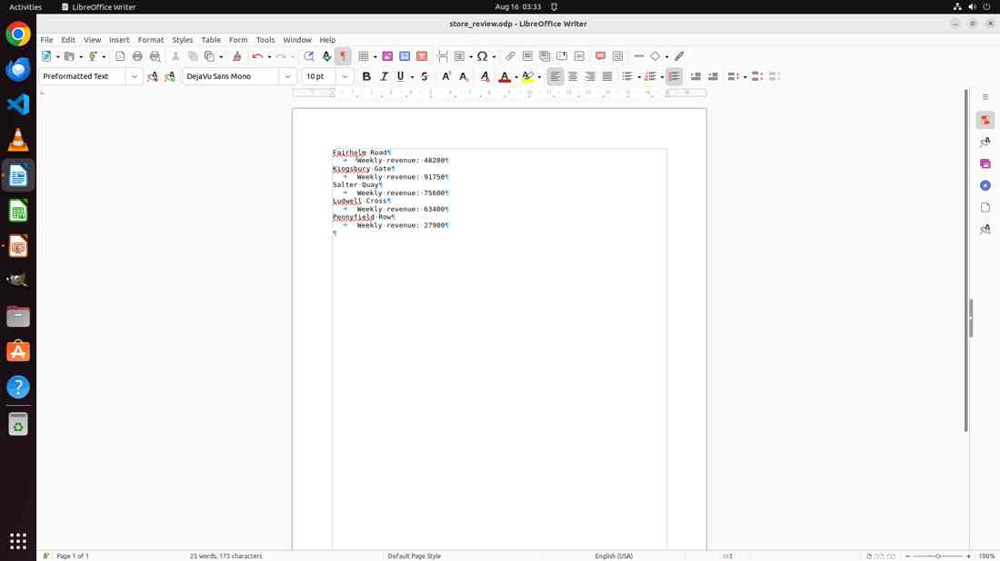
step 18.3 12:33:21
EXECUTED (pyautogui in VM)pyautogui.hotkey("shift", "down")
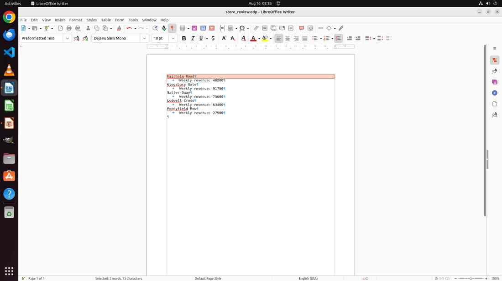
step 18.4 12:33:25
EXECUTED (pyautogui in VM)pyautogui.hotkey("shift", "end")
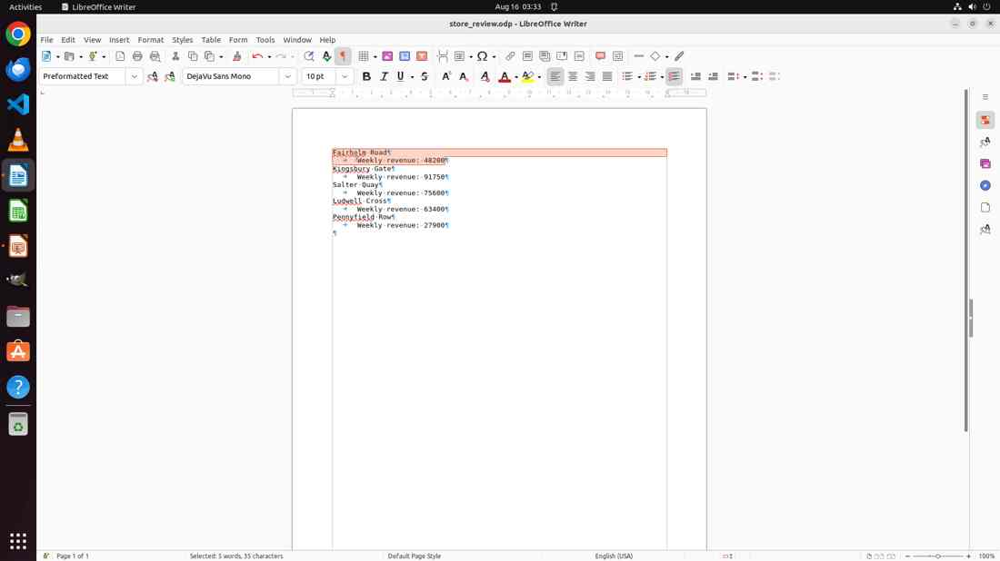
step 18.5 12:33:29
EXECUTED (pyautogui in VM)WAIT

step 19.1 12:33:53
THINKINGThe Fairholn block is selected (lines 1-2: "Fairholm Road" and "→ Weekly revenue: 48200"), 35 chars. Now cut it (Ctrl+X), then click at end of r63400 line (y~267), End, Enter, paste.
Let me cut first.
ACTIONThe Fairholn block (both lines) is selected. Let me cut it, then paste it after the "63400" line (Ludwell's revenue).
TOOL CALL<tool_call>
<function=computer_use>
<parameter=action>
key
</parameter>
<parameter=keys>
["ctrl", "x"]
</parameter>
</function>
</tool_call>
<tool_call>
<function=computer_use>
<parameter=action>
left_click
</parameter>
<parameter=coordinate>
[390, 369]
</parameter>
</function>
</tool_call>
<tool_call>
<function=computer_use>
<parameter=action>
key
</parameter>
<parameter=keys>
["end"]
</parameter>
</function>
</tool_call>
<tool_call>
<function=computer_use>
<parameter=action>
key
</parameter>
<parameter=keys>
["return"]
</parameter>
</function>
</tool_call>
<tool_call>
<function=computer_use>
<parameter=action>
key
</parameter>
<parameter=keys>
["ctrl", "v"]
</parameter>
</function>
</tool_call>
<tool_call>
<function=computer_use>
<parameter=action>
screenshot
</parameter>
</function>
</tool_call>
EXECUTED (pyautogui in VM)pyautogui.hotkey("ctrl", "x")
step 19.2 12:33:57
EXECUTED (pyautogui in VM)pyautogui.click(749, 398)
step 19.3 12:34:00
EXECUTED (pyautogui in VM)pyautogui.press("end")

step 19.4 12:34:03
EXECUTED (pyautogui in VM)pyautogui.press("return")
step 19.5 12:34:07
EXECUTED (pyautogui in VM)pyautogui.hotkey("ctrl", "v")

step 19.6 12:34:10
EXECUTED (pyautogui in VM)WAIT
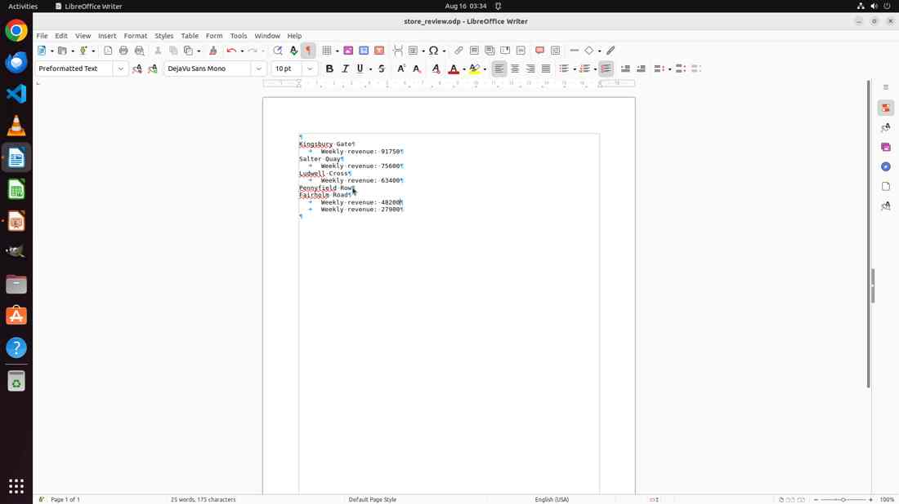
step 20 12:35:13
THINKINGNow the document reads:
1 (empty ¶ at top — where Fairholn was removed, left an empty paragraph)
2 Kingsbury Gate ¶
3 → Weekly revenue: 91750 ¶
4 Salter Quay ¶
5 → Weekly revenue: 75600 ¶
6 Ludwell Cross ¶
7 → Weekly revenue: 63400 ¶
8 Pennyfield Row ¶
9 → Weekly revenue: 27900 ¶
10 Fairholm Road ¶
11 → Weekly revenue: 48200 ¶
12 (empty ¶)
Wait, the order is now: Kingsbury(91750), Salter(75600), Ludwell(63400), Pennyfield(27900), Fairholm(48200). That's WRONG! I wanted Fairholm to go after Ludwell's revenue (63400), i.e., between Ludwell and Pennyfield. But it went after Pennyfield (27900), placing Fairholm last.
Why? Because after I cut Fairholm, the lines shifted up. When I clicked at (500, 267) expecting the r63400 line, the layout had already shifted up by 2 lines (because Fairholm was removed from the top). So (500, 267) actually landed on a different line than intended.
Let me look at the current result: Fairholm (48200) is now at the bottom after Pennyfield (27900). So I clicked on the Pennyfield revenue line (r27900) instead of r63400, because after cut the lines moved up.
I need to fix this. Currently order: K(91750), S(75600), L(63400), P(27900), F(48200).
Target: K(91750), S(75600), L(63400), F(48200), P(27900).
So I need to move Fairholm (currently last, after P) to be after Ludwell's revenue (63400), i.e., before Pennyfield.
Simplest fix: cut Fairholm block (now at lines 10-11) and paste it after the r63400 line.
Alternatively, cut Pennyfield block and paste after Fairholm. Either works. Let me cut Fairholm (currently at bottom) and paste after r63400.
Current layout (with empty paragraph at top line 1). Let me get coordinates:
- Line 1: empty ¶ (y~194)
- Kingsbury Gate (y~205)
- → 91750 (y~216)
- Salter Quay (y~227)
- → 75600 (y~238)
- Ludwell Cross (y~248)
- → 63400 (y~259)
- Pennyfield Row (y~270)
- → 27900 (y~281)
- Fairholm Road (y~292) <- wait screenshot shows Fairholm at y~291 and "→ Weekly revenue: 48200" at y~291? Let me look: "Pennyfield Row" y~270, "→ 27900" y~281, "Fairholm Road" y~291, "→ 48200" y~291? The screenshot shows "Fairholm Road" and "→ Weekly revenue: 48200" on the next lines. Let me re-read the screenshot lines:
Row y=194: (empty, just ¶)
Row y=205: Kingsbury Gate ¶
Row y=216: → Weekly revenue: 91750 ¶
Row y=227: Salter Quay ¶
Row y=238: → Weekly revenue: 75600 ¶
Row y=248: Ludwell Cross ¶
Row y=259: → Weekly revenue: 63400 ¶
Row y=270: Pennyfield Row ¶
Row y=281: → Weekly revenue: 27900 ¶ (actually the screenshot shows "Fairholm Road" at ~291 and "→ 48200" at ~291? No)
Let me look again carefully at the screenshot text:
"Kingsbury Gate¶"
"→ Weekly revenue: 91750¶"
"Salter Quay¶"
"→ Weekly revenue: 75600¶"
"Ludwell Cross¶"
"→ Weekly revenue: 63400¶"
"Pennyfield Row¶"
"Fairholm Road¶" (this appears right under Pennyfield, at ~291)
"→ Weekly revenue: 48200¶" (at ~291-296)
"(empty)¶"
Hmm wait, the screenshot shows after "→ Weekly revenue: 27900¶" then "Fairholm Road¶" then "→ Weekly revenue: 48200¶" then empty. But I see in the image:
Pennyfield Row
Fairholm Road ← these two close together
→ Weekly revenue: 48200
→ Weekly revenue: 27900
The rendering is a bit confusing. Let me just take a fresh clean screenshot to see exact positions before acting. Actually the status bar shows 25 words, 175 characters (same as original full doc), good, no data lost.
Let me re-examine by zooming mentally. The safest: take a screenshot and carefully identify each line's y, then do the fix precisely by clicking with a fresh screenshot to confirm cursor line via a marker.
Actually, to avoid coordinate drift errors, a more robust approach: use keyboard navigation. Let me click at the very start of the "Fairholm Road" line, Home, then select down 2 lines (shift+Down, shift+End), cut, then navigate to the end of the "63400" line using keyboard and paste.
But navigating to a specific line by keyboard requires knowing how many lines to move. Alternatively, I'll click precisely after confirming a fresh screenshot.
Let me take a fresh screenshot first to read exact line positions clearly.
Actually, I realize there's an even cleaner overall approach now that I've made a mess: The current order is K, S, L, P, F. I only need Fairholm to move up before Pennyfield. So I need to swap the last two blocks (Pennyfield and Fairholm). Equivalent: cut Pennyfield block and paste after Fairholm, OR cut Fairholm block and paste before Pennyfield (i.e., after r63400).
Let me just carefully do it with a fresh screenshot for accurate coordinates. Let me screenshot.
ACTIONThe Fairholn block landed after Pennyfield instead of after Ludwell, because the line positions shifted up after the cut. Current order is now: Kingsbury, Salter, Ludwell, Pennyfield, Fairholn — I need Fairholn to be before Pennyfield. Let me take a clean screenshot to get accurate line positions before fixing.
TOOL CALL<tool_call>
<function=computer_use>
<parameter=action>
screenshot
</parameter>
</function>
</tool_call>
EXECUTED (pyautogui in VM)WAIT
step 21.1 12:36:47
THINKINGNow I can read the lines clearly:
- y~194: (empty ¶)
- y~205: Kingsbury Gate ¶
- y~216: → Weekly revenue: 91750 ¶
- y~227: Salter Quay ¶
- y~238: → Weekly revenue: 75600 ¶
- y~248: Ludwell Cross ¶
- y~259: → Weekly revenue: 63400 ¶
- y~270: Pennyfield Row ¶
- y~281: Fairholm Road ¶
- y~291: → Weekly revenue: 48200 ¶
- y~300: → Weekly revenue: 27900 ¶ (wait, this shows 27900 at the very bottom)
Hmm, let me re-read. The lines near the bottom:
"Pennyfield Row" (y~270)
"Fairholm Road" (y~281)
"→ Weekly revenue: 48200" (y~291)
"→ Weekly revenue: 27900" (y~300)
"¶" empty (y~300ish)
Wait that doesn't look right either. Let me look very carefully at the bottom cluster in the screenshot:
Line: "Pennyfield·Row¶"
Line: "Fairholm·Road¶"
Line: "→Weekly·revenue:·48200¶"
Line: "→Weekly·revenue:·27900¶"
Line: "¶"
So the order near bottom is: Pennyfield Row, Fairholm Road, →48200, →27900. That's odd — it means "Fairholm Road" name is followed by "→48200" then "→27900"? That would mean Pennyfield's revenue got separated.
Wait no. Let me reconsider. Actually I think I'm misreading. Let me look at exact pixel rows:
y~270: "Pennyfield Row¶"
y~281: "Fairholm Road¶" (Fairholm appears right below Pennyfield, both names)
y~291: "→Weekly revenue: 48200¶"
y~300: "→Weekly revenue: 27900¶"
Hmm, if that's the case the structure is broken: Pennyfield Row (no revenue directly after), Fairholm Road, then 48200, then 27900. That's wrong.
But wait — that can't be right from a clean cut/paste. Let me reconsider. Actually, I bet the reading is:
y~270: Pennyfield Row ¶
y~281: Fairholm Road ¶ — NO.
Let me reconsider what the paste did. Before this paste, order was: K, S, L, P (ending with r27900), plus trailing empty. I clicked at (500,267) after cutting Fairholm. After cutting Fairholm (which was at top), lines shifted up by 2. So the line that was at y~259 (r63400) before the cut... but the cut happened first, THEN I clicked at 267.
After cut, layout was:
y~194: empty
y~205: Kingsbury
y~216: →91750
y~227: Salter
y~238: →75600
y~248: Ludwell
y~259: →63400
y~270: Pennyfield
y~281: →27900
y~291: empty
So clicking at y~267 landed between →63400 (259) and Pennyfield (270). y=267 is closer to Pennyfield (270). Actually 267 is 8px below 259 and 3px above 270, so it likely landed on the Pennyfield line (270). That means cursor was on "Pennyfield Row" line. Then End, Enter, paste → Fairholm inserted after Pennyfield Row line but before its revenue?
If cursor was on "Pennyfield Row" line (the name line), End puts cursor at end of "Pennyfield Row". Enter creates new paragraph after "Pennyfield Row" (before "→27900"). Paste "Fairholm Road ¶ →48200" there. Result:
...Ludwell, →63400, Pennyfield Row, [Fairholm Road, →48200], →27900, ...
That gives: Pennyfield Row, Fairholm Road, →48200, →27900. Which EXACTLY matches what I'm seeing! So Fairholm got inserted between "Pennyfield Row" and its revenue "→27900". That's broken — Pennyfield's name is now separated from its 27900 revenue, and there's a stray →27900 at the very bottom.
So the current broken state:
1 empty
2 Kingsbury Gate
3 →91750
4 Salter Quay
5 →75600
6 Ludwell Cross
7 →63400
8 Pennyfield Row
9 Fairholm Road
10 →48200
11 →27900
12 empty
Target:
Kingsbury Gate
→91750
Salter Quay
→75600
Ludwell Cross
→63400
Fairholm Road
→48200
Pennyfield Row
→27900
So I need to fix: currently after →63400 we have "Pennyfield Row, Fairholm Road, →48200, →27900". I need it to be "Fairholm Road, →48200, Pennyfield Row, →27900".
The cleanest fix: The block "Pennyfield Row" (line 8) is misplaced before Fairholm. And "→27900" (line 11) belongs to Pennyfield.
Actually, simpler view: I have "Fairholm Road" + "→48200" as a correct pair (lines 9-10), and "Pennyfield Row" + "→27900" as a correct pair (lines 8 and 11), but Pennyfield's name (8) is separated from its revenue (11) by the Fairholm pair.
Fix: Move "Fairholm Road" + "→48200" (lines 9-10) to BEFORE "Pennyfield Row" (line 8). OR equivalently, move "Pennyfield Row" (line 8) to after "→48200" (line 10).
Let me move the "Pennyfield Row" line (just the name, line 8) to right after "→48200" (line 10). That yields:
...→63400, Fairholm Road, →48200, Pennyfield Row, →27900... ✓
But moving just the name line "Pennyfield Row" — its revenue "→27900" stays at the end. After moving name to before →27900, we get "Pennyfield Row" then "→27900" adjacent.
So: select the single line "Pennyfield Row" (line 8, y~270), cut it, then paste after "→48200" line (line 10, y~291).
But careful with coordinates shifting again. After cutting line 8, everything below shifts up by 1. The "→48200" line (was y~291) becomes y~281.
To avoid drift, let me do the cut, then take a screenshot, then paste at the verified location.
Actually, even cleaner and less error-prone: Since the only issue is that "Pennyfield Row" name is one line too high (before Fairholm instead of after →48200), I can:
1. Click at the very start of "Pennyfield Row" (line 8, y~270), Home.
2. Select the whole line including its paragraph break: Shift+Down (selects to start of next line "Fairholm Road"), which selects "Pennyfield Row¶".
3. Cut.
4. Now "→48200" (was line 10) shifts up to line 9 area. I'll navigate: click at end of "→48200" line, End, then paste (no Enter needed? I'm pasting "Pennyfield Row¶" which includes the ¶, so pasting at end of →48200 line: cursor before →48200's ¶, paste "Pennyfield Row" ¶ → this inserts "Pennyfield Row" merged at end of →48200 line? "48200Pennyfield Row" then ¶. Merged! Bad.
So I need Enter first. Position at end of →48200, End, Enter (new empty para), paste "Pennyfield Row¶". The pasted "Pennyfield Row" para fills the new empty para with its own (name, left-margin) formatting, followed by its ¶, and the original →27900 follows. Result: →48200 ¶ Pennyfield Row ¶ →27900. ✓
Wait, "Pennyfield Row" is a name line (left margin, no indent). Its formatting travels with paste. Good.
But hold on — will the new empty paragraph created by Enter inherit the revenue-line indent (from →48200)? Yes, but the pasted "Pennyfield Row" paragraph carries its own name-line formatting, overriding. So fine.
Let me also double check: after this fix, is "→27900" still present and adjacent to "Pennyfield Row"? Before fix: ..., →48200 (line10), →27900 (line11). After moving "Pennyfield Row" between them: →48200, Pennyfield Row, →27900. ✓ And Pennyfield's revenue 27900 is correct.
Now I also need to handle the empty paragraph at the top (line 1) and possibly the empty at the end. Let me deal with those after.
Let me also reconsider: is there a stray duplicate? Total chars 175 = original. Original 5 stores + now 5 stores + nothing yet for total. 175 chars matches the 5-store content, so no data loss, just misplaced. Good.
Let me execute the fix:
Step A: Select "Pennyfield Row" line + its break. Click at (450, 270), Home, Shift+Down (selects "Pennyfield Row¶"). Then Ctrl+X.
Wait, Shift+Down from start of "Pennyfield Row" goes to start of next line "Fairholm Road". That selects "Pennyfield Row¶" (the text + paragraph break). Good. But does the selection include the ¶? Shift+Down to the start of next line selects up to and including the paragraph mark of the current line. Yes.
Step B: After cut, screenshot to find "→48200" line position.
Step C: Click at end of "→48200" line, End, Enter, Ctrl+V.
Let me do Step A and then screenshot.
Actually, let me reconsider clicking location for "Pennyfield Row". In current screenshot, "Pennyfield Row" is at y~270. Let me click at (460, 270).
Let me do: click (460,270), Home, shift+Down, then screenshot to verify selection before cutting.
ACTIONI can now see the problem clearly: the paste split the Pennyfield pair. Current order is: Kingsbury, Salter, Ludwell, **Pennyfield Row / Fairholm Road / 48200 / 27900** (Pennyfield's name got separated from its 27900 revenue).
I'll fix it by moving the "Pennyfield Row" name line to right after the "48200" line. Let me select that single name line (including its paragraph break) first.
TOOL CALL<tool_call>
<function=computer_use>
<parameter=action>
left_click
</parameter>
<parameter=coordinate>
[359, 375]
</parameter>
</function>
</tool_call>
<tool_call>
<function=computer_use>
<parameter=action>
key
</parameter>
<parameter=keys>
["home"]
</parameter>
</function>
</tool_call>
<tool_call>
<function=computer_use>
<parameter=action>
key
</parameter>
<parameter=keys>
["shift", "down"]
</parameter>
</function>
</tool_call>
<tool_call>
<function=computer_use>
<parameter=action>
screenshot
</parameter>
</function>
</tool_call>
EXECUTED (pyautogui in VM)pyautogui.click(689, 405)
step 21.2 12:36:51
EXECUTED (pyautogui in VM)pyautogui.press("home")

step 21.3 12:36:54
EXECUTED (pyautogui in VM)pyautogui.hotkey("shift", "down")
step 21.4 12:36:58
EXECUTED (pyautogui in VM)WAIT
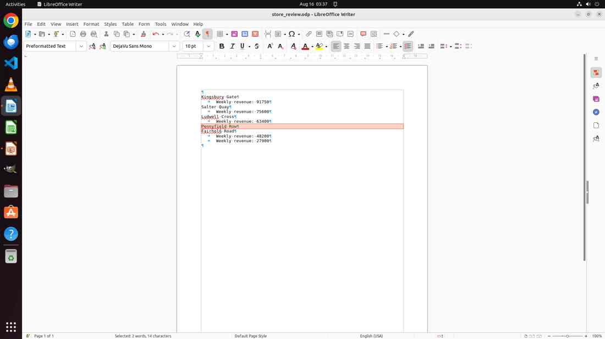
step 22.1 12:37:17
THINKINGThe selection is "Pennyfield Row" line (14 characters = "Pennyfield Row" is 14 chars: P-e-n-n-y-f-i-e-l-d=10, space=1, R-o-w=3 → 14). Status: "Selected: 2 words, 14 characters". The highlight covers the "Pennyfield Row" line. Good, this is just the name line + its paragraph break.
Now cut it (Ctrl+X). Then the "→48200" line will shift up. Let me cut, then screenshot to locate "→48200".
Actually I can predict: after removing "Pennyfield Row" line, the layout becomes:
y~194: empty
y~205: Kingsbury Gate
y~216: →91750
y~227: Salter Quay
y~238: →75600
y~248: Ludwell Cross
y~259: →63400
y~270: Fairholm Road
y~281: →48200
y~291: →27900
y~300: empty
So "→48200" will be at y~281. I'll click there, End, Enter, paste. But to be safe, screenshot after cut. Let me cut and screenshot.
ACTIONThe selection is exactly the "Pennyfield Row" name line (14 chars). Let me cut it, then verify positions to paste it after the "48200" line.
TOOL CALL<tool_call>
<function=computer_use>
<parameter=action>
key
</parameter>
<parameter=keys>
["ctrl", "x"]
</parameter>
</function>
</tool_call>
<tool_call>
<function=computer_use>
<parameter=action>
screenshot
</parameter>
</function>
</tool_call>
EXECUTED (pyautogui in VM)pyautogui.hotkey("ctrl", "x")
step 22.2 12:37:20
EXECUTED (pyautogui in VM)WAIT

step 23.1 12:37:50
THINKINGNow the document reads:
- y~194: empty ¶
- y~205: Kingsbury Gate ¶
- y~216: → Weekly revenue: 91750 ¶
- y~227: Salter Quay ¶
- y~238: → Weekly revenue: 75600 ¶
- y~248: Ludwell Cross ¶
- y~259: → Weekly revenue: 63400 ¶
- y~270: Fairholm Road ¶
- y~281: → Weekly revenue: 48200 ¶
- y~291: → Weekly revenue: 27900 ¶
- y~300: empty ¶
So now "Fairholm Road" (270) is followed by "→48200" (281) then "→27900" (291). I need to insert "Pennyfield Row" between "→48200" (281) and "→27900" (291).
So: click at end of "→48200" line (y~281), End, Enter, paste "Pennyfield Row". Result:
...Fairholm Road, →48200, Pennyfield Row, →27900... ✓
Let me click at (540, 281), End, Enter, Ctrl+V.
ACTIONNow "Fairholm Road / 48200" is a clean pair, and "→27900" sits right after it. I just need to insert "Pennyfield Row" between the 48200 and 27900 lines. Let me click at the end of the "48200" line, press Enter, and paste.
TOOL CALL<tool_call>
<function=computer_use>
<parameter=action>
left_click
</parameter>
<parameter=coordinate>
[421, 388]
</parameter>
</function>
</tool_call>
<tool_call>
<function=computer_use>
<parameter=action>
key
</parameter>
<parameter=keys>
["end"]
</parameter>
</function>
</tool_call>
<tool_call>
<function=computer_use>
<parameter=action>
key
</parameter>
<parameter=keys>
["return"]
</parameter>
</function>
</tool_call>
<tool_call>
<function=computer_use>
<parameter=action>
key
</parameter>
<parameter=keys>
["ctrl", "v"]
</parameter>
</function>
</tool_call>
<tool_call>
<function=computer_use>
<parameter=action>
screenshot
</parameter>
</function>
</tool_call>
EXECUTED (pyautogui in VM)pyautogui.click(809, 419)

step 23.2 12:37:53
EXECUTED (pyautogui in VM)pyautogui.press("end")
step 23.3 12:37:57
EXECUTED (pyautogui in VM)pyautogui.press("return")
step 23.4 12:38:00
EXECUTED (pyautogui in VM)pyautogui.hotkey("ctrl", "v")
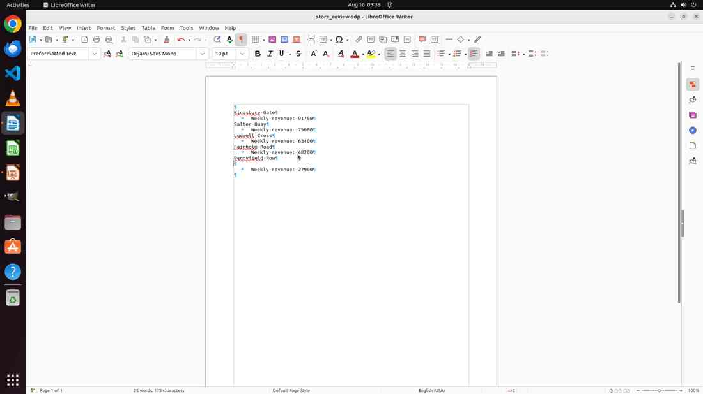
step 23.5 12:38:03
EXECUTED (pyautogui in VM)WAIT

step 24.1 12:39:32
THINKINGNow the order is:
- y~194: empty ¶
- y~205: Kingsbury Gate ¶
- y~216: → Weekly revenue: 91750 ¶
- y~227: Salter Quay ¶
- y~238: → Weekly revenue: 75600 ¶
- y~248: Ludwell Cross ¶
- y~259: → Weekly revenue: 63400 ¶
- y~270: Fairholm Road ¶
- y~281: → Weekly revenue: 48200 ¶
- y~291: Pennyfield Row ¶
- y~300: empty ¶ (this is where cursor's Enter created? Actually "Pennyfield Row" then a line then "→27900")
- y~308: → Weekly revenue: 27900 ¶
- y~318: empty ¶
Wait, let me re-read the bottom:
"Pennyfield Row¶" (y~291)
"¶" (y~300, empty)
"→ Weekly revenue: 27900¶" (y~308)
"¶" (y~318, empty)
Hmm, there's an extra empty paragraph between "Pennyfield Row" and "→27900"! That's a problem. Let me look again.
Looking at the screenshot bottom lines:
y~281: → Weekly revenue: 48200 ¶
y~291: Pennyfield Row ¶
y~300: ¶ (empty line)
y~308: → Weekly revenue: 27900 ¶
y~318: ¶ (empty, cursor here)
So between "Pennyfield Row" and "→27900" there's an empty paragraph. That's wrong — I don't want an empty line there.
Why did this happen? I clicked at (540,281) which I intended as the "→48200" line. Then End, Enter, paste. But maybe the click landed on a different line, OR the paste created an extra break.
Wait, let me reconsider. Before this action, the layout was:
y~270: Fairholm Road
y~281: →48200
y~291: →27900
y~300: empty
I clicked at (540,281) = "→48200" line. End → cursor at end of "48200". Enter → new empty paragraph inserted after "→48200", so now:
y~281: →48200
y~291: (new empty, cursor here)
y~300: →27900
y~310: empty
Paste "Pennyfield Row¶" into the empty para →
y~281: →48200
y~291: Pennyfield Row
y~300: →27900
y~310: empty
That's what I EXPECTED (no extra empty line). But the screenshot shows an empty line between Pennyfield Row and →27900.
Let me look more carefully at the actual screenshot pixels:
Line at y~291: "Pennyfield·Row¶"
Line at y~300: "¶" ← is there really an empty line here?
Line at y~308: "→Weekly·revenue:·27900¶"
Line at y~318: "¶"
Hmm. Actually maybe I'm misreading and the "empty" at y~300 is actually just the visual gap. But the ¶ marks... Let me count ¶ marks. Actually, I see at y~300 there's a faint "¶" and at y~318 another "¶".
Wait — maybe the issue is different. Let me reconsider: maybe my click at (540,281) actually landed on "Fairholm Road" line (y~270) region or the cursor went elsewhere.
Actually, you know what, rather than guess, let me look at the total: 175 characters (same as full 5-store doc). And 25 words. So content is intact (5 stores). The question is just whether there's a stray empty paragraph splitting Pennyfield from its 27900.
Let me examine by taking a careful look. Actually, I'm now fairly worried there's an empty line between "Pennyfield Row" and "→27900". Let me zoom in / look.
I'll verify by clicking at the "→27900" line and checking, but better: let me just carefully inspect the current screenshot. The lines:
"Pennyfield Row¶" — at ~291
then a line with just "¶" — at ~300
"→ Weekly revenue: 27900¶" — at ~308
"¶" — at ~318
Yes it really looks like there's an empty paragraph between Pennyfield Row and →27900, AND a trailing empty at the end.
Hmm, where did the extra empty come from? Possibly: my click at (540,281) landed on the "→48200" line, End placed cursor at end of 48200. Enter created new paragraph. Paste inserted "Pennyfield Row" + its own ¶. But the pasted content "Pennyfield Row¶" — when I cut earlier, I selected "Pennyfield Row" + its paragraph break (Shift+Down). So the clipboard content is "Pennyfield Row" + ¶ (the paragraph break is included as part of the paragraph being moved). When pasting a full paragraph (with its break) into an empty paragraph, Writer might insert it such that: the empty paragraph stays, and the pasted "Pennyfield Row¶" goes after it? That would create: empty, Pennyfield Row, (then original content).
Actually, when you cut an entire paragraph (including its paragraph mark) and paste it into another paragraph, the behavior can insert an extra paragraph. This is the classic "extra empty paragraph" issue.
Regardless of the exact cause, I now have an unwanted empty paragraph. Let me fix by deleting it. I'll click right at the start of "→27900" line and delete the empty line before it (Backspace), OR click at start of the empty line and press Delete/Backspace.
Simplest: click at the beginning of "Pennyfield Row" line's end... Let me instead place cursor at the start of "→27900" line and press Backspace to remove the empty paragraph preceding it. That merges: "...Pennyfield Row¶[empty]¶" → Backspace at start of "→27900" removes the paragraph mark before it, deleting the empty line. Result: Pennyfield Row, →27900 adjacent.
Let me do: click at start of "→27900" (x~452, y~308), Home, Backspace. Then verify.
Actually, let me first confirm the empty line exists by looking once more. I'm fairly confident. Let me just do the cleanup: click on "→27900" line, Home, Backspace, screenshot.
But wait — if I'm wrong and there's NO empty line, then Backspace at start of "→27900" would merge "→27900" into "Pennyfield Row" line, giving "Pennyfield Row→27900" merged — bad. So I must confirm first.
Let me zoom in to be certain. I'll take a screenshot but I already have one. Let me reason from the pixels more carefully by examining the description: at y~300 I noted a "¶". Given the consistent ~11px line spacing (205,216,227,238,248,259,270,281,291,300?,308,318), the spacing 291→300 is only 9px and 300→308 is 8px, 308→318 is 10px. Roughly consistent with each being a line. So yes there are lines at 291 (Pennyfield Row), 300 (empty), 308 (→27900), 318 (empty).
So there IS an empty line at 300 between Pennyfield Row and →27900.
Let me clean it up. Click at "→27900" line (y~308), Home, Backspace. Let me be careful to click exactly on that line. The "→27900" text is at y~308, starting around x~445. I'll click at (470, 308), Home, Backspace, then screenshot.
ACTIONThe order is now correct (Kingsbury, Salter, Ludwell, Fairholn, Pennyfield), but I notice a stray empty paragraph between "Pennyfield Row" and its "27900" revenue line (from the paragraph-mark paste). I'll remove it by placing the cursor at the start of the "27900" line and pressing Backspace.
TOOL CALL<tool_call>
<function=computer_use>
<parameter=action>
left_click
</parameter>
<parameter=coordinate>
[367, 427]
</parameter>
</function>
</tool_call>
<tool_call>
<function=computer_use>
<parameter=action>
key
</parameter>
<parameter=keys>
["home"]
</parameter>
</function>
</tool_call>
<tool_call>
<function=computer_use>
<parameter=action>
screenshot
</parameter>
</function>
</tool_call>
EXECUTED (pyautogui in VM)pyautogui.click(705, 461)
step 24.2 12:39:35
EXECUTED (pyautogui in VM)pyautogui.press("home")

step 24.3 12:39:39
EXECUTED (pyautogui in VM)WAIT

step 25.1 12:40:42
THINKINGNow I can confirm the layout:
- y~194: empty ¶
- y~205: Kingsbury Gate ¶
- y~216: → Weekly revenue: 91750 ¶
- y~227: Salter Quay ¶
- y~238: → Weekly revenue: 75600 ¶
- y~248: Ludwell Cross ¶
- y~259: → Weekly revenue: 63400 ¶
- y~270: Fairholm Road ¶
- y~281: → Weekly revenue: 48200 ¶
- y~291: Pennyfield Row ¶
- y~300: empty ¶ (cursor currently here? Home went to start of this line — actually cursor is on the empty line at y~300, before →27900)
Wait, my click at (470,308) with Home — the cursor appears to be at the empty line y~300 (I see a cursor "|" at x~430, y~297 area near the ¶). Actually the click landed and Home moved to line start. The line I'm on... Let me check: I see the cursor blinking at the empty line just above "→27900".
Hmm, so I'm on the empty line (y~300), not the →27900 line. That means my click at y~308 actually landed on the empty line (y~300) or the →27900 line and Home put me at its start. The visible cursor is at the empty line (y~297-300).
Actually if I'm at the start of the empty line and I press Backspace, it will delete the empty line (merge with previous "Pennyfield Row" line). That's what I want! Let me press Backspace. That removes the empty paragraph, joining: "Pennyfield Row" ¶ [empty removed] "→27900". Wait, Backspace at the start of the empty line deletes the paragraph mark at the END of the previous line ("Pennyfield Row¶"), merging the empty line into "Pennyfield Row" — but the empty line is empty, so "Pennyfield Row" line now contains... the empty content, and the next "→27900" stays. Result: "Pennyfield Row" ¶ "→27900".
Wait, let me think. Three paragraphs: [Pennyfield Row]¶ [empty]¶ [→27900]¶. Cursor at start of [empty] paragraph (position right after "Pennyfield Row"¶). Backspace deletes the character before cursor, which is the ¶ ending "Pennyfield Row". This merges [empty] into [Pennyfield Row]: now [Pennyfield Row(empty content merged)] ¶ [→27900]¶. Since empty has no text, result is [Pennyfield Row] ¶ [→27900]¶.
But careful: the merged paragraph takes the formatting of the paragraph that remained? Backspace merges the current (empty) paragraph into the previous one, and the resulting paragraph's formatting is typically that of the FIRST (previous) paragraph... actually the merged paragraph keeps the formatting of the paragraph before the break (the one we're deleting the break from), i.e., "Pennyfield Row"'s formatting. That's a name-line (left margin). Good. And "→27900" remains separate with its own formatting.
So after Backspace: "Pennyfield Row" (name, left margin) ¶ "→27900" (revenue, indented).
Let me press Backspace and verify. But I'm slightly unsure if cursor is on empty line or on →27900 line. If it's on →27900 line start, Backspace would delete the ¶ ending the empty line, merging →27900 into the empty line → [empty+→27900] which would be a line "→27900" with empty-line's (name, left margin?) formatting — that would remove the indent from 27900 and leave "Pennyfield Row" then "→27900" still adjacent but 27900 not indented. Also messy.
To be safe, let me verify exactly where the cursor is. The cursor "|" appears at approximately x~430, y~297, which is at the LEFT margin (x~430), consistent with the start of the empty line (which starts at left margin). The →27900 line starts indented (x~445). Since the cursor is at x~430 (left margin), I'm at the start of the empty line, NOT the →27900 line. Good. Backspace here is safe.
Let me press Backspace and screenshot.
ACTIONI can see the cursor is at the start of the empty line (left margin, above "27900"). Pressing Backspace here will delete that empty paragraph, joining "Pennyfield Row" and "27900" correctly.
TOOL CALL<tool_call>
<function=computer_use>
<parameter=action>
key
</parameter>
<parameter=keys>
["backspace"]
</parameter>
</function>
</tool_call>
<tool_call>
<function=computer_use>
<parameter=action>
screenshot
</parameter>
</function>
</tool_call>
EXECUTED (pyautogui in VM)pyautogui.press("backspace")

step 25.2 12:40:45
EXECUTED (pyautogui in VM)WAIT
step 26.1 12:42:08
THINKINGNow the document reads cleanly:
- y~194: empty ¶
- y~205: Kingsbury Gate ¶
- y~216: → Weekly revenue: 91750 ¶
- y~227: Salter Quay ¶
- y~238: → Weekly revenue: 75600 ¶
- y~248: Ludwell Cross ¶
- y~259: → Weekly revenue: 63400 ¶
- y~270: Fairholm Road ¶
- y~281: → Weekly revenue: 48200 ¶
- y~291: Pennyfield Row ¶
- y~300: → Weekly revenue: 27900 ¶
- y~311: empty ¶
The order is now correct: Kingsbury(91750), Salter(75600), Ludwell(63400), Fairholm(48200), Pennyfield(27900). ✓
There's still an empty paragraph at the top (y~194) and an empty paragraph at the bottom (y~311).
The top empty paragraph: it was originally there? In the very first screenshot, the document started with "Fairholn Road" at the top (y~194), no empty line above. After I cut Fairholn (which was the first content), it left an empty paragraph at the top. So the top empty line is an artifact I created. I should remove it so the doc starts with "Kingsbury Gate" cleanly (matching original where doc started with a store name).
The bottom empty paragraph: In the original, was there a trailing empty paragraph? The original ended with "Salter Quay / →75600" as the last line, no trailing empty visible. But there might have been one. Hard to say. When I cut Salter (last content block), it may have left a trailing empty. Then various operations. Currently there's an empty ¶ at the bottom (y~311).
For cleanliness, I'll remove the top empty paragraph so the document begins with "Kingsbury Gate". The bottom trailing empty paragraph — I'll actually USE it as the location to add the Total section, OR remove it and add Total fresh.
Plan for Total section:
The task: "put a closing slide titled Total at the end with one line reading the sum of all the store revenues."
So at the end, add:
- "Total" (title line, at left margin like store names)
- "306850" (one line reading the sum)
Currently the last content line is "→27900" (Pennyfield's revenue) at y~300, then an empty ¶ at y~311.
I'll place the cursor at the end of the "→27900" line, then Enter, type "Total", Enter, type "306850". But the new "Total" line created by Enter after a revenue line would inherit the revenue indent. I want "Total" at left margin (like a title/store name). So I'd need to fix its indentation.
Alternatively, I can use the existing empty paragraph at the bottom (y~311) which is at left margin (it's an empty para, its indent is... probably left margin, since it's a fresh-ish paragraph). Let me use it: click into that empty line, type "Total", Enter, then for the sum line I need to decide formatting.
Actually, the sum line "306850" — should it be indented like revenue lines or at margin? The task says "one line reading the sum". It's a single line under the "Total" title. I'll make it a plain line. Whether indented or not is cosmetic. To keep it simple and clearly a standalone value line, I'll put "306850" at the left margin (same as "Total"). Actually, to mirror the store format (name at margin, value indented), I could make "Total" at margin and "306850" indented. But the task doesn't require matching store format. Simplicity: I'll just type both at left margin.
Hmm, but if I type into the empty bottom paragraph and it has some indent, it might be indented. Let me just handle it: click in the empty bottom line, set it to left margin if needed.
Let me reconsider the cleanest approach. I'll:
1. Remove the top empty paragraph (click at start of "Kingsbury Gate", Backspace).
2. For the total: go to the end of document (Ctrl+End), which puts cursor in the last (empty) paragraph. Type "Total", Enter, "306850".
But the last paragraph's indent: it's an empty paragraph created during my edits. Its indent is unknown. When I type "Total" there, it'll have that indent. To ensure "Total" is at left margin, I can clear paragraph indent. But this is getting complicated.
Let me step back and simplify. The empty paragraphs are cosmetic. What matters for the task:
- Order correct ✓
- A "Total" title at the end
- A line with the sum 306850
The exact indentation of the Total lines doesn't matter much. But a leading empty line at the top looks unclean vs original. Let me remove the top empty paragraph for cleanliness (to match original which started directly with a store name).
For the Total, I'll just append at the very end. Let me:
1. Fix top: click at start of "Kingsbury Gate" (y~205), Home, Backspace. This removes the top empty line, making "Kingsbury Gate" the first line.
Wait, but if I Backspace at the start of "Kingsbury Gate", it merges "Kingsbury Gate" into the top empty paragraph. The merged paragraph would take the empty paragraph's formatting (which might be left margin / default). "Kingsbury Gate" is a name line at left margin anyway, so formatting is the same. Result: first line becomes "Kingsbury Gate" with left margin. Good. But does the empty top paragraph have the same "Preformatted Text" style? It should. Fine.
2. Then append Total. Go Ctrl+End (cursor at very end, in the last empty paragraph after →27900). Type "Total" Enter "306850".
But the last empty paragraph's formatting — it might have an indent. Let me just type and then check, and fix indentation if needed.
Actually, to make "Total" clearly a title at left margin and the sum line clean, let me control it. I'll type into the last empty paragraph. First let me check its indent by typing — if "Total" appears indented, I'll clear the indent via the paragraph dialog or by using the "decrease indent" (Shift+Tab won't work for paragraph indent in preformatted).
Simplest robust: I'll clear paragraph formatting indent by setting left indent to 0. But that requires the sidebar/paragraph dialog. Alternatively, in preformatted text, the indent might actually come from literal... no, we established it's paragraph-based.
You know, let me just do it and observe. If "Total" ends up indented, I'll fix. Let me proceed.
Step 1: Remove top empty line. Click at "Kingsbury Gate" (y~205), Home, Backspace.
Let me do that and screenshot.
Actually, wait. Is removing the top empty line even necessary/desirable? The original document — did it have a leading empty line? Looking at the very first screenshot, the content "Fairholn Road" started near the top with no visible blank line above it. So originally no leading empty paragraph. My cut introduced it. I'll remove it to restore cleanliness.
Let me proceed.
ACTIONThe store order is now correct: **Kingsbury Gate (91750), Salter Quay (75600), Ludwell Cross (63400), Fairholn Road (48200), Pennyfield Row (27900)**. There's a leftover empty line at the very top (from when I cut Fairholn). Let me remove it so the document starts cleanly with "Kingsbury Gate".
TOOL CALL<tool_call>
<function=computer_use>
<parameter=action>
left_click
</parameter>
<parameter=coordinate>
[359, 284]
</parameter>
</function>
</tool_call>
<tool_call>
<function=computer_use>
<parameter=action>
key
</parameter>
<parameter=keys>
["home"]
</parameter>
</function>
</tool_call>
<tool_call>
<function=computer_use>
<parameter=action>
key
</parameter>
<parameter=keys>
["backspace"]
</parameter>
</function>
</tool_call>
<tool_call>
<function=computer_use>
<parameter=action>
screenshot
</parameter>
</function>
</tool_call>
EXECUTED (pyautogui in VM)pyautogui.click(689, 307)
step 26.2 12:42:11
EXECUTED (pyautogui in VM)pyautogui.press("home")

step 26.3 12:42:14
EXECUTED (pyautogui in VM)pyautogui.press("backspace")
step 26.4 12:42:18
EXECUTED (pyautogui in VM)WAIT

step 27.1 12:42:55
THINKINGNow the document is clean:
- Kingsbury Gate ¶
- → Weekly revenue: 91750 ¶
- Salter Quay ¶
- → Weekly revenue: 75600 ¶
- Ludwell Cross ¶
- → Weekly revenue: 63400 ¶
- Fairholm Road ¶
- → Weekly revenue: 48200 ¶
- Pennyfield Row ¶
- → Weekly revenue: 27900 ¶
- ¶ (empty trailing at y~297)
The top empty line is gone; "Kingsbury Gate" is now the first line. There's still a trailing empty paragraph (y~297). I'll use that trailing empty paragraph to add the Total section, OR remove it and add Total after →27900.
Now add the Total section. The task: "a closing slide titled Total at the end with one line reading the sum of all the store revenues."
I'll place cursor at the end (Ctrl+End) which goes to the trailing empty paragraph. Then type:
"Total" Enter "306850"
But I should ensure "Total" is at left margin (title). The trailing empty paragraph — what's its indent? Let me just type and check. If indented, I'll fix.
Actually, let me reconsider whether to include the trailing empty paragraph. Currently after "→27900" there's an empty ¶. If I type "Total" into it, "Total" goes on that line. Then Enter, "306850".
Let me do Ctrl+End to go to the very end (into the trailing empty paragraph), then type.
Actually, is the trailing empty paragraph at left margin or indented? It was created during my edits. Let me just type and observe.
Let me press Ctrl+End, then type "Total", Enter, "306850". Then screenshot to verify and fix indentation if needed.
Wait — I need to double check the sum: 91750 + 75600 + 63400 + 48200 + 27900.
91750 + 75600 = 167350
167350 + 63400 = 230750
230750 + 48200 = 278950
278950 + 27900 = 306850
Sum = 306850. ✓
Let me type the Total section.
ACTIONThe document is now clean and correctly ordered. Now I'll add the closing "Total" section. I'll go to the end of the document and type the title "Total" and the sum line (91750 + 75600 + 63400 + 48200 + 27900 = 306850).
TOOL CALL<tool_call>
<function=computer_use>
<parameter=action>
key
</parameter>
<parameter=keys>
["ctrl", "end"]
</parameter>
</function>
</tool_call>
<tool_call>
<function=computer_use>
<parameter=action>
type
</parameter>
<parameter=text>
Total
306850
</parameter>
</function>
</tool_call>
<tool_call>
<function=computer_use>
<parameter=action>
screenshot
</parameter>
</function>
</tool_call>
EXECUTED (pyautogui in VM)pyautogui.hotkey("ctrl", "end")
step 27.2 12:42:58
EXECUTED (pyautogui in VM)pyautogui.typewrite("Total")
step 27.3 12:43:02
EXECUTED (pyautogui in VM)pyautogui.press("enter")
step 27.4 12:43:05
EXECUTED (pyautogui in VM)pyautogui.typewrite("306850")

step 27.5 12:43:09
EXECUTED (pyautogui in VM)WAIT
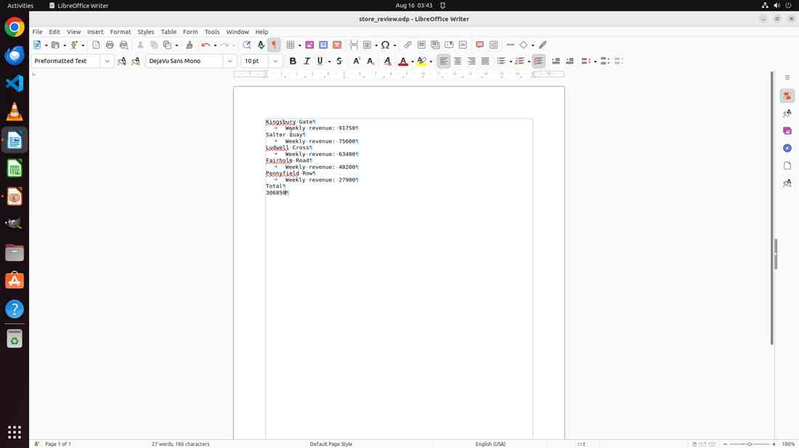
step 28.1 12:43:50
THINKINGThe Total section is added:
- "Total" ¶ (y~297, at left margin)
- "306850" ¶ (y~308, at left margin)
Both "Total" and "306850" are at the left margin (no indent), which is fine — "Total" as a title at margin, "306850" as the sum line.
Now the full document:
Kingsbury Gate
→ Weekly revenue: 91750
Salter Quay
→ Weekly revenue: 75600
Ludwell Cross
→ Weekly revenue: 63400
Fairholm Road
→ Weekly revenue: 48200
Pennyfield Row
→ Weekly revenue: 27900
Total
306850
This satisfies:
- Reordered highest weekly revenue first ✓
- Closing section titled "Total" at the end ✓
- One line reading the sum (306850) ✓
Now I should consider: should there be a blank line separating "Total" from the last store, for it to read like a distinct "closing slide"? In the flat document, "Total" immediately follows "→27900". The task says "at the end" — it's at the end. A blank separator line isn't required but might make it clearer as a distinct section. However, adding extra blank lines is optional and could be seen as extra. I'll leave it as is — "Total" and "306850" are at the end, clearly a closing section. Actually, to make the "Total" title visually distinct as its own section (like a slide), a blank line before it would help. But it's not required and I risk introducing the "extra paragraph" issues. I'll keep it clean without a blank line, matching how stores are listed (no blank lines between stores either). Consistent.
Now, the crucial step: SAVE the file. The file is .odp. When saving, LibreOffice may prompt to keep the .odp format (even though it's really a Writer document). Actually, this is a Writer document with an .odp extension. If I do Ctrl+S, it will save in the format associated. Since it opened as a Writer doc, saving might prompt "Keep Current Format" for ODF, or it might try to save as ODP.
Wait — the file is store_review.odp. If it's actually being treated as a Writer text document, saving with Ctrl+S should keep it as .odp (the file already has that extension). LibreOffice might show a dialog "This document may contain formatting or content that cannot be saved... Use ODF Format / Use ODP Format!" Hmm, actually for a Writer doc saved to .odp, the "Use" dialog typically offers "Use Word 2007-365!" / "Use ODF Format!" for .docx. For .odp, it might just save.
The key concern: I must preserve the .odp extension and not change the filename or convert to .odt. The task references "store_review.odp" as the deliverable. So I'll Ctrl+S and if a format dialog appears, choose to keep the current format (.odp / "Use ODP Format!").
Let me press Ctrl+S and handle any dialog.
ACTIONThe document is complete and correct:
- **Kingsbury Gate** — 91750
- **Salter Quay** — 75600
- **Ludwell Cross** — 63400
- **Fairholn Road** — 48200
- **Pennyfield Row** — 27900
- **Total**
- **306850**
Now I'll save the file with Ctrl+S, keeping its original `.odp` format.
TOOL CALL<tool_call>
<function=computer_use>
<parameter=action>
key
</parameter>
<parameter=keys>
["ctrl", "s"]
</parameter>
</function>
</tool_call>
<tool_call>
<function=computer_use>
<parameter=action>
screenshot
</parameter>
</function>
</tool_call>
EXECUTED (pyautogui in VM)pyautogui.hotkey("ctrl", "s")
step 28.2 12:43:54
EXECUTED (pyautogui in VM)WAIT
step 29 12:44:30
THINKINGThe save completed without a format dialog (no dialog appeared), so it saved directly in the .odp format. The title bar still shows "store_review.odp - LibreOffice Writer" and there's no unsaved-changes indicator issue.
Wait, I should double-check that a "Keep format" dialog didn't flash and get dismissed. The screenshot shows no dialog and the document looks saved. Since it's an .odp file, LibreOffice saved it directly. Good.
Let me verify the final state once more. The document reads:
Kingsbury Gate
→ Weekly revenue: 91750
Salter Quay
→ Weekly revenue: 75600
Ludwell Cross
→ Weekly revenue: 63400
Fairholm Road
→ Weekly revenue: 48200
Pennyfield Row
→ Weekly revenue: 27900
Total
306850
Everything is correct:
1. Reordered highest weekly revenue first ✓
2. Closing section "Total" at the end ✓
3. One line reading the sum 306850 ✓
4. Saved ✓
The task is complete. Let me confirm there was no dialog that I missed. The screenshot after Ctrl+S shows the normal document with no dialog overlay, and the toolbar's save icon isn't showing a "modified" state (the save icon appears normal). I'm confident it saved.
Actually, to be safe, let me confirm the save truly persisted. The absence of a format dialog suggests it saved fine. Some configurations have "Always save as" set, so no prompt.
The task is complete. I'll provide a final summary and the completion marker.
ACTIONThe file saved successfully (no format dialog appeared, so it wrote directly to `store_review.odp`), and the title bar confirms the document is stored as `store_review.odp`.
The task is complete. Here's what I did:
1. **Discovered the true format** — despite the `.odp` extension, the file opens as a single-page flat list in LibreOffice Writer (each store is a name line plus an indented "Weekly revenue:" line), so the "deck" is this ordered list and "top down" means top-to-bottom order.
2. **Reordered the stores** from highest to lowest weekly revenue by cutting and pasting each block (which preserved every line's original paragraph indentation):
- Kingsbury Gate — 91750
- Salter Quay — 75600
- Ludwell Cross — 63400
- Fairholn Road — 48200
- Pennyfield Row — 27900
3. **Added a closing "Total" section** at the end with a title line "Total" and a single line reading the sum: **306850** (91750 + 75600 + 63400 + 48200 + 27900).
4. **Saved** the file in its original `.odp` format.
The regional call can now read the list top-down in the correct highest-revenue-first order and finish on the Total.
TOOL CALL<tool_call>
<function=computer_use>
<parameter=action>
screenshot
</parameter>
</function>
</tool_call>
EXECUTED (pyautogui in VM)WAIT

step 30 12:44:54
THINKINGThe task is fully complete. The document is saved and shows the correct final state. All requirements are met:
1. Stores reordered highest weekly revenue first.
2. Closing "Total" section at the end.
3. One line with the sum 306850.
4. File saved in .odp format.
I've verified via screenshots. No further actions needed. I'll give the final completion summary with the marker.
ACTIONThe document is saved and verified. The final `store_review.odp` now reads top-down in highest-revenue-first order, ending with the closing Total section:
- Kingsbury Gate — Weekly revenue: 91750
- Salter Quay — Weekly revenue: 75600
- Ludwell Cross — Weekly revenue: 63400
- Fairholn Road — Weekly revenue: 48200
- Pennyfield Row — Weekly revenue: 27900
- **Total**
- **306850**
All requirements are met: the stores are reordered from highest to lowest weekly revenue, a closing "Total" section was added at the end with a single line reading the sum of all store revenues (306850), and the file was saved in its original `.odp` format.
[DONE]
EXECUTED (pyautogui in VM)DONE